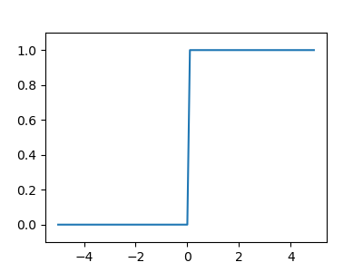
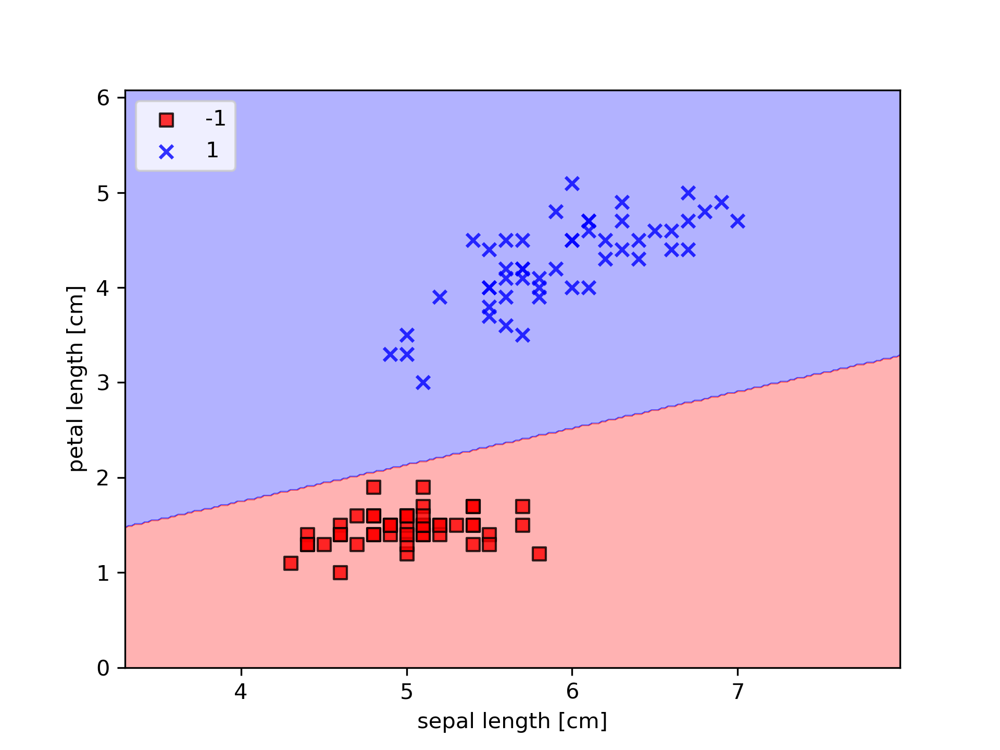
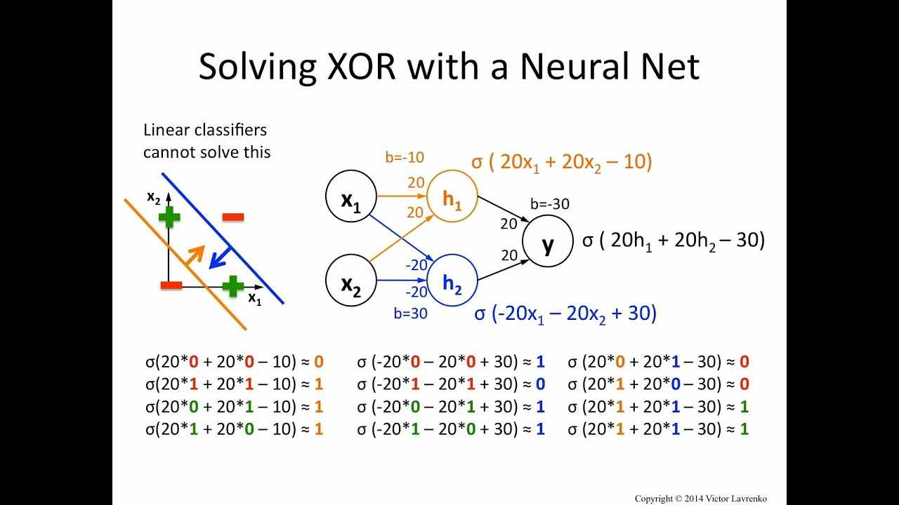
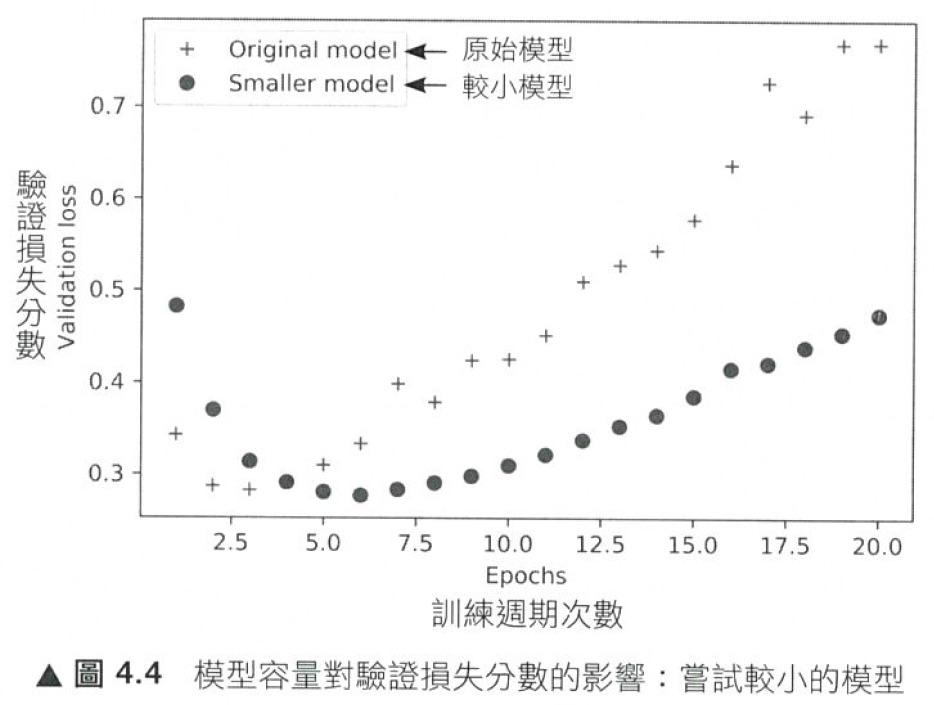
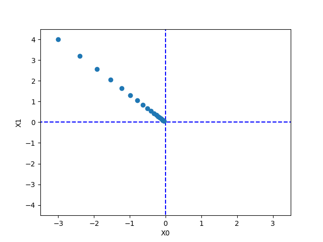
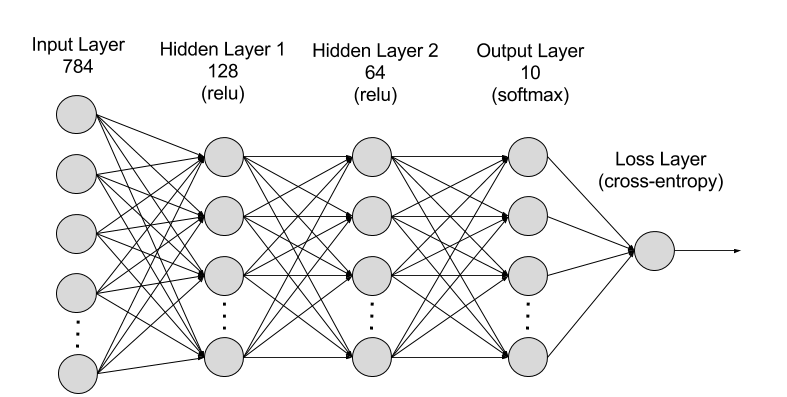
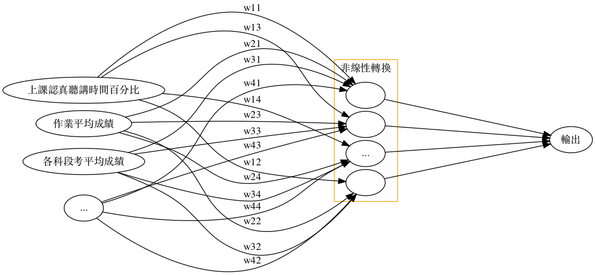
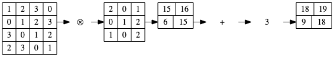
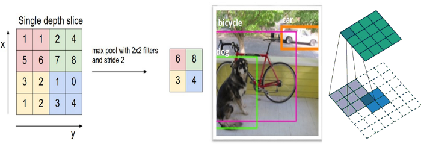

感知器與神經網路
Table of Contents
1. Story of gate: From perceptron to MLP
1.1. Example #1
- Question
有三個A、一個B，如何進行分類?

Figure 1: 分類任務:問題
- Idea
最簡單的分類方式是在A和B中間直接找條直線(\(w_1x_1+w_2x_2+b=0\))就可以將A和B完整切出兩個區塊，然後再搭配階梯函數(step function)將>0與<=0分別設為1與0，用來代表類別0與1。該直線方程式如下：
\begin{equation} \label{org9d238d7} y = \begin{cases} 1, & w_1x_1 + w_2x_2-b>0 \\ 0, & w_1x_1 + w_2x_2-b\leq0 \\ \end{cases} \end{equation}
- Solution
經過無數的嚐試錯誤，也許我們可以矇到一個如下的方程式

Figure 2: 分類任務:Solution
如果畫成Perceptron的圖:
\begin{align*} A(0,1) \rightarrow y &= f(0,1) = f(1\times0+1\times1-0.5) = f(0.5) = 1 \\ A(1,0) \rightarrow y &= f(1,0) = f(1\times1+1\times0–0.5) = f(0.5) = 1\\ A(1,1) \rightarrow y &= f(1,1) = f(1\times1+1\times1–0.5) = f(1.5) = 1\\ B(0,0) \rightarrow y &= f(0,0) = f(1\times0+1\times0–0.5) = f(-0.5) = 0\\ \end{align*}
如果將圖2的四點點代入y(方程式\eqref{org9d238d7}):
- OR gate
有點計概基礎的同學，應該可以發現圖1與OR邏輯閘一致，其真值表如下
A B A OR B 0 0 0 0 1 1 1 0 1 1 1 1 - Python實作
上述 OR gate的python實作如下
1: import numpy as np 2: 3: def step_function(x): 4: return np.array(x>0, dtype=np.int) 5: 6: def OR(x1, x2): 7: x = np.array([x1, x2]) 8: w = np.array([1, 1]) 9: b = -0.5 10: theta = 0 11: y = np.sum(w*x) + b 12: return step_function(y) 13: 14: print("0 OR 0 -> ", OR(0,0)) 15: print("0 OR 1 -> ", OR(0,1)) 16: print("1 OR 0 -> ", OR(1,0)) 17: print("1 OR 1 -> ", OR(1,1))
0 OR 0 -> 0 0 OR 1 -> 1 1 OR 0 -> 1 1 OR 1 -> 1
1.2. Example #2
上述範例中，我們以瞎貓精神找出了一組solution解決了OR gate的分類問題，請比照辦理，解決AND gate，建構出perceptro，實作出python code.
已知AND gate真值表如下
| A | B | A AND B |
|---|---|---|
| 0 | 0 | 0 |
| 0 | 1 | 0 |
| 1 | 0 | 0 |
| 1 | 1 | 1 |
1.3. XOR Problem
- Question
XOR(互斥或)真值表如下:
A B A XOR B 0 0 0 0 1 1 1 0 1 1 1 1 其輸入/輸出分佈圖為

Figure 3: XOR Gate
- Idea
這個時候一般線性的分類就沒有辦法很完美分割(如下圖)，所以就需要一些變形的方法來達到目的。
Figure 4: XOR Gate Solution ideas
一個便當吃不飽那就吃兩個阿
–馬惠帝
即便一個人再如何bumbler，仍有可能提出一些明智的話語，就如同星爺告訴我們的

所以，一條線無法分割–那就用兩條啊
- Solution

如前所述，一條線為一個perceptron，這裡會用到兩個
- \(h_1(x) = x_1 + x_2 - 0.5\)
- \(h_2(x) = x_1 + x_2 - 1.5\)

Figure 5: XOR Gate Solution 2
將圖4的4個點代入\(h_1\):
\begin{align*} h_1(0,0) &= f(1\times0+1\times0–0.5) = f(-0.5) = 0\\ h_1(0,1) &= f(1\times0+1\times1-0.5) = f(0.5) = 1\\ h_1(1,0) &= f(1\times1+1\times0–0.5) = f(0.5) = 1\\ h_1(1,1) &= f(1\times1+1\times1–0.5) = f(1.5) = 1\\ \end{align*}
將圖4的4個點代入\(h_2\):
\begin{align*} h_2(0,0) &= f(1\times0+1\times0–1.5) = f(-1.5) = 0\\ h_2(0,1) &= f(1\times0+1\times1-1.5) = f(-0.5) = 0\\ h_2(1,0) &= f(1\times1+1\times0–1.5) = f(-0.5) = 0\\ h_2(1,1) &= f(1\times1+1\times1–1.5) = f(0.5) = 1\\ \end{align*}
由上可知:
- (0, 0)帶入第1個perceptron \(h_1(0,0)\)輸出-0.5、帶入第2個perceptron \(h_2(0,0)\)輸出-1.5；(-0.5, -1.5)再經由step function轉換輸出(0,0)
- (0, 1)帶入第1個perceptron \(h_1(0,1)\)輸出0.5、帶入第2個perceptron \(h_2(0,1)\)輸出-0.5；(0.5, -0.5)再經由step function轉換輸出(1,0)
- (1, 0)帶入第1個perceptron \(h_1(1,0)\)輸出0.5、帶入第2個perceptron \(h_2(1,0)\)輸出-0.5；(0.5, -0.5)再經由step function轉換輸出(1,0)
- (1, 1)帶入第1個perceptron \(h_1(1,1)\)輸出1.5、帶入第2個perceptron \(h_2(1,1)\)輸出0.5；(1.5, 0.5)再經由step function轉換輸出(1,1)
即
\begin{align*} data(0,0) &= f(h_1,h_2) = (0,0) \\ data(0,1) &= f(h_1,h_2) = (1,0) \\ data(1,0) &= f(h_1,h_2) = (1,0) \\ data(1,1) &= f(h_1,h_2) = (1,1) \\ \end{align*}
這相當於透過兩個perceptron將原本的輸入做特徵空間轉換，如圖6:

Figure 6: XOR Gate Solution 3
這個時候只要設計一個線性分類器就可以完美分割兩類的資料了阿，如圖7:

Figure 7: XOR Gate Solution 4
XOR問題的神經網路結構如下圖:

Figure 8: XOR Gate Solution 5
- \(h_1(x) = x_1 + x_2 - 0.5\)
1.4. MLP (Multilayer perceptron)
由XOR問題的例子可以知道，第一層兩個Perceptron在做的事情其實是將資料投影到另一個特徵空間去,最後再把h1和h2的結果當作另一個Perceptron的輸入，再做一個下一層的Perceptron就可以完美分類XOR問題。
上例其實就是一個Two-Layer Perceptrons，第一層的Perceptron輸出其實就是每個hidden node，所以如果hidden layer再多一層就是Three-Layer Perceptrons，所以很多層的Perceptrons組合起來就是多層感知機 (Multilayer perceptron, MLP)。MLP其實就是可以用多層和多個Perceptron來達到最後目的，有點像用很多個回歸方法/線性分類器一層一層疊加來達到目的。
中間一堆的hidden layer其實就是在做資料的特徵擷取，可以降維，也可以增加維度，而這個過程不是經驗法則去設計，而是由資料去學習得來，最後的輸出才是做分類，所以最後一層也可以用SVM來分類。
如果層數再多也可以稱為深度神經網路(deep neural network, DNN)，所以現在稱的DNN其實就是人工神經網路的MLP。有一說法是說因為MLP相關的神經網路在之前因為電腦限制所以performance一直都沒有很好的突破，所以相關研究沒有像SVM這麼的被接受，因此後來Deep learning的聲名大噪，MLP也換個較酷炫的名字(deep neural network)來反轉神經網路這個名稱的聲勢。
多層感知機是一種前向傳遞類神經網路，至少包含三層結構(輸入層、隱藏層和輸出層)，並且利用到「倒傳遞」的技術達到學習(model learning)的監督式學習，以上是傳統的定義。現在深度學習的發展，其實MLP是深度神經網路(deep neural network, DNN)的一種special case，概念基本上一樣，DNN只是在學習過程中多了一些手法和層數會更多更深1。
2. 類神經網路
2.1. 概念
生物神經系統的結構，神經元(Neuron)之間 互相連結，由外部神經元接收信號，再層層 傳導至其他神經元，最後作出反應的過程

Figure 9: 神經元與神經網路
神經網絡是非常重要的一種機器學習機制，它是一種模仿人類大腦學習機制的一種方法。人類的大腦從外界接受刺激，並處理這些輸入（通過神經元處理），最終產生輸出2。
當任務變得複雜的時候，大腦會使用多個神經元來形成一個複雜的網絡，並在神經元之間傳遞信息，人工神經網絡就是模仿這種處理機制的一種算法。如下圖的網絡是一種由多個互聯的神經元組成的網絡2。

Figure 10: DEEP NEURAL NETWORK
圖10中的圓圈就是神經元(perceptron)。每一個perceptron都由weight、bias和activation function(如圖11)組成。數據由input layer輸入。然後perceptron基於weight和bias，通過線性變換將輸入數據進行轉換。activation function則是用來完成非線性的轉換。數據從輸入層輸入後，會來到隱藏層。隱藏層將會對數據進行處理並輸送到輸出層。這種數據處理方式就是著名的前向傳播。
Figure 11: Activation function
當輸出層的結果和我們期望的結果相差很大怎麼辦呢？在神經網絡中，我們可以基於這種錯誤來更新神經元的權重和偏移。這種處理方式被稱為後向傳播算法。一旦所有的數據經歷過這個處理，最終的權重和便宜就可以用來做預測了2, 3。

Figure 12: Neural Network
2.2. NN如何學習
- 神經網路學習(ANN)的基本步驟
利用隨機梯度下降法(SGD)求梯度並更新 weight 和 bias 參數
- 從訓練資料中隨機選擇一部分資料
- 構建網路，利用前向傳播，求出輸出值。利用輸出值與目標值得到損失函數(loss Function)，利用損失函數，並用反向傳播方法，求各參數的梯度。
- 將權重參數沿梯度方向進行微小更新
- 重複以上步驟(epoch=100, 500, 1000, …)直到誤差最小化
(http://www.feiguyunai.com/index.php/2019/03/31/python-ml-24th-backp/)
- 從訓練資料中隨機選擇一部分資料
- Error Function
Error(錯誤) = 真正的值(t) + 預測值(y)
\[ E=\frac{1}{2}\sum^{n}_{i=1}(y_i = t_i)^2\]
\[ E=-\sum_{i=1}^{n}t_i*\log{y_i}\]
- Keras 在 losses.py 定義常用的損失函數
- https://github.com/keras-team/keras/blob/master/keras/losses.py
- MSE: mean_squared_error
- MAE: mean_absolute_error
- mape = MAPE = mean_absolute_percentage_error
- msle = MSLE = mean_squared_logarithmic_error
- kld = KLD = kullback_leibler_divergence
- cosine = cosine_proximity
- https://github.com/keras-team/keras/blob/master/keras/losses.py
- 誤差實際計算
Figure 13: 誤差計算範例
- 學習步驟

Figure 14: 類神經網路
- 將 weight 與 bias 隨機設定，例如，全設為 0
- 計算出模型結果值
- 計算出誤差：即計算結果與真實值之差異

Figure 15: 類神經網路
- 定義 weight 與 bias 的更新策略(update the weights and bias)，其更新策略為從錯誤中學習。學習規則為
\[\Delta w=\eta X^T\cdot (\hat{y} - y)\]: \(w\)(新的)=\(w\)(前一回)+\(\Delta w\)(誤差變動)
\[\Delta b=\eta (\hat{y} - y)\]: \(b\)(新的)=\(b\)(前靣)+\(\Delta b\)(誤差變動)
Figure 16: 類神經網路
- 使用新的 weight 與 bias，計算直到誤差很小(定義何時結束)
\[\Delta w=\eta X^T\cdot (\hat{y} - y)\]: \(w\)(新的)=\(w\)(前一回)+\(\Delta w\)(誤差變動)
\[\Delta b=\eta (\hat{y} - y)\]: \(b\)(新的)=\(b\)(前靣)+\(\Delta b\)(誤差變動)
\[\eta\] = 學習率
- 將 weight 與 bias 隨機設定，例如，全設為 0
2.3. 為什麼沒有Activation Function的perceptron為linear model
思考下方堆疊兩層感知器的例子(這裡我們捨棄偏權值b，使問題單純化)：

Figure 17: Stacked perceptrons
其中
\[
y_1 = w_1^1x_1 + w_2^1x_2 \\
y_2 = w_3^1x_1 + w_4^1x_2 \\
\hat{y} = w_1^2y_1 + w_2^2y_2
\]
若將\(y_1\)與\(y_2\)代入\(\hat{y}\)，可以發現仍然是原始數據的線性組合，代表即使堆疊多層的感知器時，若沒有使用激活函數，本質上可以被單層感知器取代，如下4：
\[\hat{y} = w_1^2y_1 + w_2^2y_2 = (w_1^1w_1^2 + w_2^1x_2^2)x_1 + (w_3^1w_1^2 + w_4^1x_2^2)x_2\]
2.4. Backprogation: 如何快速計算 w 與 b 的更新
- Godfather of Deep Learning
- 1986: the backpropagation algorithm for training multi-layer neural networks
- Hinton, G. E., Osindero, S. and Teh, Y. (2006), A fast learning algorithm for deep belief nets. Neural Computation, 18, pp. 1527-1554
- 2012: AlexNet (Alex Krizhevsky)啟動 AI/NN 電腦視覺熱潮
- 2018: Turing Prize (Yoshua Bengio and Yann LeCun)
- 1986: the backpropagation algorithm for training multi-layer neural networks
- 倒遞神經網路(Back-Propagation) 數學推導
- 數學推導
- 背景: 以下 a,b,c 為輸入值.並且激勵函數(activity function) 採用 sigmoid 進行說明:
依上圖所述，數學式如下：
\[ z = aw_a + bw_b + cw_c \]
\[ \delta (z) = \frac{1}{1+e^{-x}} \]
- 由於在訓練過程中目的是找到最適合的權重值(weight).可透過微分求解梯度後可以找到權重應該修正的數值.因為每個變數都需要各自進行微分,因此透過偏微分求解(在遇到非目標為分數值時,將其視為常數):
\[ \frac{\vartheta z}{\vartheta w_a} = a , \frac{\vartheta z}{\vartheta w_b} = b, \frac{\vartheta z}{\vartheta w_c} = c\]
\[ \delta '(z) = (1-\delta (z)) \cdot \delta (z) \] - 得知以上各個偏微分數值後,透過連鎖律進行神經元的偏微分,可得到以下式子:
\[\frac{\vartheta f}{\vartheta w_a} = \frac {\vartheta f}{\vartheta z} \cdot \frac{\vartheta z}{\vartheta w_a} = [(1-\delta (z)) \cdot \delta (z)] \cdot a\]
- 背景: 以下 a,b,c 為輸入值.並且激勵函數(activity function) 採用 sigmoid 進行說明:
- 數學推導
2.5. Activation Function
Activation function是神經網絡中極其重要的概念。它們決定了某個神經元是否被activate，這個神經元接受到的信息是否是有用的，是否該留下或者是該拋棄。
Activation function的形式如下2：
- 在神經元裡定義一些權重(weight)，經過計算之後，判斷結果是否超過一個閾值(threshold)，如果超過，神經元輸出為 1；反之，則輸出 0。
- 如果不用Activation function，每一層output都是上層input的線性函數，無論神經網絡有多少層，輸出都是輸入的線性組合。
- 加入非線性的function就能改變線性問題
- Step function
Step function，若輸入超過 0，則輸出 1；若輪入小於等於 0，則輸出 0，如公式\eqref{orge5ccfc9}所示，其函數圖形則如圖18所示。
\begin{equation} \label{orge5ccfc9} h(x) = \begin{cases} 1 & \text{if } x > 0 \\ 0 & \text{if } x\leq 0 \end{cases} \end{equation}
1: import numpy as np 2: import matplotlib.pylab as plt 3: 4: def step_function(x): 5: return np.array(x>0, dtype=np.int) 6: 7: x = np.arange(-5.0, 5.0, 0.1) 8: y = step_function(x) 9: plt.figure(figsize=(4,3)) 10: plt.plot(x, y) 11: plt.ylim(-0.1, 1.1) 12: plt.savefig("images/stepFuncPlot.png") 13: return "images/stepFuncPlot.png"

Figure 18: 階梯函數圖
- 為什麼第5行(np.array(x>0, dtype=np.int))這樣寫會變成0/1
- 當調整參數時，節點輸出的值在 0 和 1 之間躍遷，對調整參數造成很大不便。
- 為什麼第5行(np.array(x>0, dtype=np.int))這樣寫會變成0/1
- Sigmoid 函數
公式\eqref{org8edd1e7}即為 sigmoid 函數(sigmoid function)，其中的\(exp(-x)\)代表\(e^{-x}\)，\(e\)為納皮爾常數(Napier’s constant)2.71828…的實數。
\begin{equation} \label{org8edd1e7} h(x) = \frac{1}{1+exp(-x)} = \frac{1}{1+e^{-x}} \end{equation}
sigmoid 函數的 python 實作如下所述，而其圖形結果為平滑曲線(圖19)，針對輸入產生連續性的輸出，但仍與階梯函數相同，以 0 為界線，這種平滑度對於神經網路有相當重要的意義。此外，step function只能回傳 0 或 1，而 sigmoid 函數可以回傳實數。
1: import numpy as np 2: import matplotlib.pylab as plt 3: def sigmoid(x): 4: return 1 / (1 + np.exp(-x)) 5: x = np.arange(-5.0, 5.0, 0.1) 6: y = sigmoid(x) 7: print(y) 8: plt.figure(figsize=(4,3)) 9: plt.plot(x, y) 10: plt.ylim(-0.1, 1.1) 11: plt.savefig("images/sigmoidplot2.png") 12: return "images/sigmoidplot2.png"
Figure 19: sigmoid 函數圖
- 非線性功能
- 輸出：（0,1）
- 處理極端值
- 常用於隱藏層和輸出層
- 常用於二元分類
- 梯度消失問題
- 非線性功能
- ReLU 函數
神經網路感知器使用的活化函數多為非線性函數，如階梯函數與 sigmoid 函數，其主要原因在於，若在神經網路中使用線性函數，則不論加深多少層，這些函數都能合併為一個單一函數。例如，一個以\(h(x)=cx\)為活化函數的三層網路，其執行結果便相當於\(y(x)=h(h(h(x)))\)，亦即，其執行網果就如同一個以\(y(h)=ax\)為活化函數的一層網路，其中\(a=c^{3}\)。
雖然 sigmoid 函數很早就應用於神經網路中，但最近較常使用的為 ReLU (Rectified Linear Unit)函數，若輸入超過 0，則直接輸出；若輪入小於 0，則輸出 0，如公式\eqref{orgfcc3b72}所示，其函數圖形則如圖20所示。
\begin{equation} \label{orgfcc3b72} h(x) = \begin{cases} x & \text{if } x > 0 \\ 0 & \text{if } x\leq 0 \end{cases} \end{equation}
or
\[h(x) = max(0,x)\]
1: import numpy as np 2: import matplotlib.pylab as plt 3: def relu(x): 4: return np.maximum(0, x) 5: x = np.arange(-5.0, 5.0, 0.1) 6: y = relu(x) 7: print(y) 8: plt.figure(figsize=(4,3)) 9: plt.plot(x, y) 10: plt.ylim(-0.5, 5) 11: plt.savefig("images/ReLUPlot.png") 12: #return "ReLUPlot.png"
Figure 20: ReLU 函數圖
- 非線性功能
- 輸出範圍：（0，\(\infty\)）
- 捨棄一些信息
- 常用於隱藏層
- 梯度爆炸問題
- 非線性功能
3. 感知器(Perception)
3.1. 何謂感知器
Perceptron is a single layer neural network and a multi-layer perceptron is called Neural Networks.
收到多個輸入訊號之後，再當作一個訊號輸出，如圖21所示，\(x_1, x_2\)為輸入訊號，\(y\)為輸出訊號，\(w_1, w_2\)代表權重(weight)，圖中的圓圈稱為「神經元」或稱作「節點」。神經元\(x_1, x_2\)的訊號是否會觸發神經元\(y\)使其輸出訊號則取決於\(w_1x_1+w_2x_2\)是否會超過某個臨界值\(\theta\)。

Figure 21: 收到兩組輸入訊號的感知器
若以算式表示此一觸發條件則如公式\eqref{org26847da}所示。
3.2. 感知器工作原理
- Version #1: 使用weight
感知器（perceptron）是 人造神經元（artificial neuron）的一種，也是最基本的一種。它接受一些輸入，產生一個輸出。

Figure 22: Perceptron version 1
- 這種架構的輸入/輸出關係為線性
- 神經網路中再多的線性perceptron叠加，仍為線性
- 無法解決 線性不可分 的問題
- 線性可分 v.s. 線性不可分
- 低維映射至高維
在SVM的解決方案中，可以透過一個非線性的映射將低維空間線性不可分的樣本轉換至高維空間，使其成為線性可分 6，例如:

Figure 24: Kernal function mapping
- 這種架構的輸入/輸出關係為線性
- Version #2: 加入bias
Figure 25: Perceptron version 2
- 不加 bias 你的分類線(面)就必須過原點，這顯然是不靈活的
- 透過bias，可以將NN進行左右調整，以適應(fit)更多情況
- 可以將bias視為一個activate perceptron的threshold
- bias也可以視為當輸入均為0時的輸出值
- 從仿生學的角度，刺激生物神經元使它興奮需要刺激強度超過一定的閾值，同樣神經元模型也仿照這點設置了bias
- 不加 bias 你的分類線(面)就必須過原點，這顯然是不靈活的
- Version #3: 加入activation function
加入activation function
Figure 26: Perceptron version 2
- 結論: 什麼是perceptron
其實Perceptron就只是一個兩層的神經網路，輸入層和輸出層
3.3. 執行感知器: 邏輯閘實作
- AND gate(版本#1：只設定權重)
以上述感知器的運作方式來模擬 AND 邏輯閘的功能，可由以下程式碼實現出來。
1: def AND(x1, x2): 2: w1, w2, theta = 0.5, 0.5, 0.7 3: tmp = x1*w1 + x2*w2 4: if tmp <= theta: 5: return 0 6: else: 7: return 1 8: 9: print("AND(1, 0): ", AND(1,0)) 10: print("AND(1, 0): ", AND(1,1))
AND(1, 0): 0 AND(1, 0): 1
如程式碼第9行所示，傳入\(1, 0\)為輸入訊號，而根據計算結果是否達到臨界值(\(\theta=0.7\))來決定最終的輸出訊號\(0\)。
- AND gate(版本#2: 導入權重及偏權值)
在版本#1 的實作中，我們只透過輸入訊號與權重的計算來實現感知器的運作，事實上，這個感知器也可以用公式\eqref{orgae0c0d9}來表示，這裡利用\(b\)這個被稱作「偏移值」或「偏權值」的參數來控制神經元的觸發難度，此時的感知器如圖27所示。
\begin{equation} \label{orgae0c0d9} y = \begin{cases} 0 & \text (b+w_1x_1+w_2x_2 \leq 0) \\ 1 & \text (b+w_1x_1 + w_2x_2 > 0) \end{cases} \end{equation}

Figure 27: 加入偏移值\(b\)的感知器
在圖27中，增加了一個權重為\(b\)、輸入值為 1 的訊號，偏權值的作用與權重\(w_1\)及\(w_2\)不同，\(w_1\)與\(w_2\)的功能是控制輸入訊號重要程度的參數，但是\(b\)的功能是調整輸出訊號 1 的參數，偏權值也包含了「偏移」的意思。這是指在沒有輸入時，輸出究竟會產生多少偏移量。此外，由於偏移值的輸入訊號固定為 1，以圖形表示時，會用灰色填滿神經元，藉此區隔其他神經元。
以下為針對上述版本#1 的 AND 邏輯閘模擬程式碼進行的修正，將偏移值的機制加入感知器的運作流程中。
Figure 28: And Gate perceptron
1: import numpy as np 2: def AND(x1, x2): 3: x = np.array([x1, x2]) 4: w = np.array([0.5, 0.5]) 5: b = -0.7 6: theta = 0 7: tmp = np.sum(w*x) + b 8: if tmp <= theta: 9: return 0 10: else: 11: return 1 12: 13: print("1 AND 0 -> ",AND(1,0)) 14: print("1 AND 1 -> ",AND(1,1)) 15: 16: #draw corresponding dots 17: import matplotlib.pyplot as plt 18: xs = np.array([0, 0, 1, 1]) 19: ys = np.array([0, 1, 0, 1]) 20: for xi, yi in zip(xs, ys): 21: print(AND(x, y)) 22:
1 AND 0 -> 0 1 AND 1 -> 1
- OR, NAND gates
同樣的感知器架構亦可實作出 OR 邏輯閘的功能：
1: import numpy as np 2: def OR(x1, x2): 3: x = np.array([x1, x2]) 4: w = np.array([0.5, 0.5]) 5: b = -0.2 6: theta = 0 7: tmp = np.sum(w*x) + b 8: if tmp <= theta: 9: return 0 10: else: 11: return 1 12: print(OR(0,0))
也可實作出 NAND 邏輯閘的原理。
1: import numpy as np 2: def NAND(x1, x2): 3: x = np.array([x1, x2]) 4: w = np.array([-0.5, -0.5]) 5: b = 0.7 6: tmp = np.sum(w*x) + b 7: if tmp <= 0: 8: return 0 9: else: 10: return 1 11: print(NAND(0,0))
4. 以感知器解決分類問題(監督式學習範例)
從「鳶尾花資料集」取出兩類花(Setosa, Versicolor)，藉由不同的兩個屬性（花萼長、花瓣長）對其行分類，如圖29。
1: # coding: utf-8 2: import numpy as np 3: import pandas as pd 4: import matplotlib.pyplot as plt 5: from matplotlib.colors import ListedColormap 6: ### 感知器模型 7: class Perceptron(object): 8: """Perceptron classifier. 9: 參數： 10: ------------ 11: eta : float: 學習率 (0.0 ~ 1.0) 12: n_iter : int: 訓練次數 13: Passes over the training dataset. 14: random_state : int 15: 屬性 16: ----------- 17: w_ : 1d-array: 訓練後的權重 18: Weights after fitting. 19: errors_ : list: 每次訓練的錯誤次數 20: 21: """ 22: def __init__(self, eta=0.01, n_iter=50, random_state=1): 23: self.eta = eta 24: self.n_iter = n_iter 25: self.random_state = random_state 26: 27: def fit(self, X, y): 28: """Fit training data. 29: Parameters 30: ---------- 31: X : {array-like}, shape = [n_samples, n_features] 32: Training vectors, where n_samples is the number of samples and 33: n_features is the number of features. 34: y : array-like, shape = [n_samples] 35: Target values. 36: 37: Returns 38: ------- 39: self : object 40: 41: """ 42: rgen = np.random.RandomState(self.random_state) 43: self.w_ = rgen.normal(loc=0.0, scale=0.01, size=1 + X.shape[1]) 44: self.errors_ = [] 45: 46: for _ in range(self.n_iter): 47: errors = 0 48: for xi, target in zip(X, y): 49: update = self.eta * (target - self.predict(xi)) 50: self.w_[1:] += update * xi 51: self.w_[0] += update 52: errors += int(update != 0.0) 53: self.errors_.append(errors) 54: return self 55: 56: def net_input(self, X): 57: """Calculate net input""" 58: return np.dot(X, self.w_[1:]) + self.w_[0] 59: 60: def predict(self, X): 61: """Return class label after unit step""" 62: return np.where(self.net_input(X) >= 0.0, 1, -1) 63: 64: v1 = np.array([1, 2, 3]) 65: v2 = 0.5 * v1 66: np.arccos(v1.dot(v2) / (np.linalg.norm(v1) * np.linalg.norm(v2))) 67: 68: # 讀入訓練集資料 69: df = pd.read_csv('https://archive.ics.uci.edu/ml/' 70: 'machine-learning-databases/iris/iris.data', header=None) 71: print(df.tail()) 72: 73: # select setosa and versicolor 74: y = df.iloc[0:100, 4].values 75: y = np.where(y == 'Iris-setosa', -1, 1) 76: 77: # extract sepal length and petal length 78: X = df.iloc[0:100, [0, 2]].values 79: 80: # plot data 81: plt.clf() 82: plt.scatter(X[:50, 0], X[:50, 1], 83: color='red', marker='o', label='setosa') 84: plt.scatter(X[50:100, 0], X[50:100, 1], 85: color='blue', marker='x', label='versicolor') 86: 87: plt.xlabel('sepal length [cm]') 88: plt.ylabel('petal length [cm]') 89: plt.legend(loc='upper left') 90: 91: plt.savefig('02_06.png', dpi=300) 92: # plt.show() 93: 94: # 訓練感知器模型 95: ppn = Perceptron(eta=0.1, n_iter=10) 96: ppn.fit(X, y) 97: plt.clf() 98: plt.plot(range(1, len(ppn.errors_) + 1), ppn.errors_, marker='o') 99: plt.xlabel('Epochs') 100: plt.ylabel('Number of updates') 101: 102: plt.savefig('02_07.png', dpi=300) 103: #plt.show() 104: 105: # ### A function for plotting decision regions 106: def plot_decision_regions(X, y, classifier, resolution=0.02): 107: 108: # setup marker generator and color map 109: markers = ('s', 'x', 'o', '^', 'v') 110: colors = ('red', 'blue', 'lightgreen', 'gray', 'cyan') 111: cmap = ListedColormap(colors[:len(np.unique(y))]) 112: 113: # plot the decision surface 114: x1_min, x1_max = X[:, 0].min() - 1, X[:, 0].max() + 1 115: x2_min, x2_max = X[:, 1].min() - 1, X[:, 1].max() + 1 116: xx1, xx2 = np.meshgrid(np.arange(x1_min, x1_max, resolution), 117: np.arange(x2_min, x2_max, resolution)) 118: Z = classifier.predict(np.array([xx1.ravel(), xx2.ravel()]).T) 119: Z = Z.reshape(xx1.shape) 120: plt.contourf(xx1, xx2, Z, alpha=0.3, cmap=cmap) 121: plt.xlim(xx1.min(), xx1.max()) 122: plt.ylim(xx2.min(), xx2.max()) 123: 124: # plot class samples 125: for idx, cl in enumerate(np.unique(y)): 126: plt.scatter(x=X[y == cl, 0], 127: y=X[y == cl, 1], 128: alpha=0.8, 129: c=colors[idx], 130: marker=markers[idx], 131: label=cl, 132: edgecolor='black') 133: plt.clf() 134: plot_decision_regions(X, y, classifier=ppn) 135: plt.xlabel('sepal length [cm]') 136: plt.ylabel('petal length [cm]') 137: plt.legend(loc='upper left') 138: 139: 140: plt.savefig('02_08.png', dpi=300) 141: #plt.show() 142:
0 1 2 3 4
145 6.7 3.0 5.2 2.3 Iris-virginica
146 6.3 2.5 5.0 1.9 Iris-virginica
147 6.5 3.0 5.2 2.0 Iris-virginica
148 6.2 3.4 5.4 2.3 Iris-virginica
149 5.9 3.0 5.1 1.8 Iris-virginica

Figure 29: 待分類的兩種花依其不同屬性之分佈狀況

Figure 30: 感知器訓練過程

Figure 31: 訓練後的分類結果
5. 單層感知器的極限與多層感知器: XOR gate
到目前為止，透過權重及偏權值可以設計 AND、NAND、OR, 但無法完成 XOR。然而，其實我們可以透過 NAND、OR 及 AND 三個功能組合出 XOR 還輯閘，其組合方式如圖32所示，顯然，若要再以感知器來模擬其運作原理，單層感知器已不敷使用。

Figure 32: XOR 還輯閘的組合
5.1. 多層感知器(Multilayer perceptron, MLP): XOR gate 實作

Figure 33: MLP解決XOR Gate
Figure 34: Linearly Separable
參考圖32的架構，我們可以藉由增加感知器的層數來實現 XOR 的功能，其結構如圖35所示。
Figure 35: 多層感知器模擬 XOR 還輯閘
至於其實作程式碼則如下。
1: #python code for XOR gate simulation 2: import numpy as np 3: 4: def AND(x1, x2): 5: x = np.array([x1, x2]) 6: w = np.array([0.5, 0.5]) 7: b = -0.7 8: theta = 0 9: tmp = np.sum(w*x) + b 10: if tmp <= theta: 11: return 0 12: else: 13: return 1 14: 15: def OR(x1, x2): 16: x = np.array([x1, x2]) 17: w = np.array([0.5, 0.5]) 18: b = -0.2 19: theta = 0 20: tmp = np.sum(w*x) + b 21: if tmp <= theta: 22: return 0 23: else: 24: return 1 25: 26: def NAND(x1, x2): 27: x = np.array([x1, x2]) 28: w = np.array([-0.5, -0.5]) 29: b = 0.7 30: tmp = np.sum(w*x) + b 31: if tmp <= 0: 32: return 0 33: else: 34: return 1 35: 36: def XOR(x1, x2): 37: s1 = NAND(x1, x2) 38: s2 = OR(x1, x2) 39: y = AND(s1, s2) 40: return y 41: 42: print("XOR(0,0): ", XOR(0,0)) 43: print("XOR(0,1): ", XOR(0,1)) 44: print("XOR(1,0): ", XOR(1,0)) 45: print("XOR(1,1): ", XOR(1,1))
XOR(0,0): 0 XOR(0,1): 1 XOR(1,0): 1 XOR(1,1): 0
6. 神經網路的學習
6.1. 從資料中學習
神經網路的特色是可以從資料中學習，此處的學習指「自動決定權重參數」，以人工來指定權重參數值這個工作太過鉅大以至於可行性不高，因為有些神經網路的權重參數可能高達數千億個。機器學習與神經網路最大的差異也在於此。以辨識手寫字（如圖36）為例，機器學習的作法是先以人工找出該字圖形的特徵量（可以透過 SIFT、SURF、HOG 等視覺領域方法），將該特徵量轉換為向量，再利用機器學習的辨識器（如 SVM、KNN）來學習這些轉換過的特徵向量；而神經網路的作法則是直接將原始圖形當成輸入，至於特徵量本身也是透過神經網路自行學習取得，再透過這些行習得的特徵量進行學習辨識。
在機器學習的過程中，一般會把資料分成訓練資料與測試資料兩類，其中訓練資料用來進行學習、尋找最佳參數；而測試資料則是用來評估訓練後的模型成效。若只使用同一種資料集（如同一個人的字跡）來進行訓練與評估，則可能導致模型只對此人的字跡有辨識成效，這㮔問題稱為過度擬合（overfitting）。

Figure 36: 手寫字體辨識
6.2. Overfitting v.s. underfitting
機器學習的本質即在於最佳化與普遍性之間的拉扯，最佳化(optimization)是指調整模型使得模型能在訓練資料上獲得最佳表現的過程；而普遍性(generalization)是指已訓練過的模型對從未見過的資料的預測能力。在訓練之初，最佳化和普遍性是高度相關的，訓練資料的損失越低、測試資料的損失也越低。此時，模型仍處於低度擬合狀態，仍有進步空間；在訓練資料經過一定回合(epoch)的訓練後，普遍程度的改善幅逐漸停止，驗證指標隨之停滯然後開始變差，於是模型開始 overfitting。也就是說，模型已經學習了一些訓練集特有的模式，但這些特有模式根本和新資料不相關、甚或會誤導對新資料的預測。
為了防止模型在訓練資料中學到錯誤或不相關的模式，最好的解決方案是取得更多訓練資料，如果無法做到這一點，次佳的解決方案是調配模型儲存的訊訊量或者限制儲存資訊的類型或數值，如果一個神經網路只能記住少量的模式，那麼優化過程將迫使它專注於最顯著的那些模式，而不會去記住那些不相關的資訊，如此才能適應從未見過的新資料。
這種週配或限制模型資訊(即參數)以對抗 overfitting 的方式稱為常規化(regularization)，幾個常見的常規化技術如下：
- 縮減神經網路的大小
即減少模型可用來學習的參數數量(包含網路的層數和每層的神經元個數)，在深度學習中，模型中可學習參數的數量(權重數量)通常被稱為容量(capacity)。直覺上，有更多參數的模型具有更多的記憶能力(memorization capacity)，因此可以很容易在訓練樣本與其目標之間做出完美的對應，但卻沒有任何適應學習的能力。例如，我們可以建立具有 500000 個參數的模型來輕鬆學習(記憶)MNIST 訓練集中的每個數字所屬類別，但這種模型對於預測新的數字圖案毫無用處。
此外，如果神經網路的記憶資源有限，則無法輕易地直接在訓練樣本與目標之間做出對應，因此，要讓損失最小化，神經網路必須採用萃取過的資料表示法，以建立對目標的預測能力；另一方面，我們仍須讓神經網路擁有足夠的參數，以免模型 underfitting。也就是說，我們必須在容量過大(too much capacity)和容量不足(not enough capacity)之間取得平衡。
然而，到目前為止還沒有有效的公式來確定網路最佳的層數和神經元數，我們必須實際在神經網路進行多次評估(在驗證集上，而非測試集)，以找到正確的模型大小。我們通常會從較少的層數和 units 數開始，再逐漸增加層的 units 數或增加新層數，直到驗證損失不再進步為止。
以 imdb 的例子來看，原本的網路模型如下：
1: model = models.Sequential() 2: model.add(layers.Dense(16, activation='relu', input_shape=(10000,))) 3: model.add(layers.Dense(16, activation='relu')) 4: model.add(layers.Dense(1, activation='sigmoid'))
如果我們將每一層的神經元數量縮小：
1: model = models.Sequential() 2: model.add(layers.Dense(4, activation='relu', input_shape=(10000,))) 3: model.add(layers.Dense(4, activation='relu')) 4: model.add(layers.Dense(1, activation='sigmoid'))
則兩個版本的驗證損失比較如下圖，黑點為縮小網路 capacity 的驗證損失值，可以看出較原始版本的表現更佳，這個版本的神經網路在第 6 個 epoch 之後才開始 overfitting（原始的模型在第 4 個 epoch）就開始 overfitting。

Figure 37: 模型容量對驗證損失分數的影響-較小的模型
相反的，如果我們刻意將神經網路的 capacity 擴大，如下，每一層的神經元數量由原來的 16 增加到 512，則結果如圖38，擴大版的神經網路幾乎在訓練之初就開始 overfitting，而且越來越嚴重，其驗證損失的表現也較原始版本差。
1: model = models.Sequential() 2: model.add(layers.Dense(512, activation='relu', input_shape=(10000,))) 3: model.add(layers.Dense(512, activation='relu')) 4: model.add(layers.Dense(1, activation='sigmoid'))
Figure 38: 模型容量對驗證損失分數的影響-較大的容量
較大模型的神經網路雖然導致驗證損失的效能下降，但在訓練損失上的表現則否，由圖39的黑點可明顯看出大網路模型在訓練期間的損失極低，然而這種效能在面對新資料（驗證資烞十）時確無法表現出來。

Figure 39: 模型容量對訓練損失分數的影響-較大的容量
- 加入權重常規化 (weight regularization)
在設計網路模型時，一個原則為：如果兩種模型有同樣的效能表現，則較簡單的模型通常是更好的設計，也更不容易導致 overfitting。這裡所謂的簡單指的是參數值分佈的熵比較小(entropy of distribution of parameter values las less entropy)的模型，或是使用較少參數的模型。因此，降低 overfitting 就是想辦法採用較小的權重值以限制神經網路的複雜性，這會讓權重的分佈更為常規化(regularized)。權重值常規化(weight regularization)在作法上就是對損失函數中較大的權重加上代價(cost)項目，通常有兩種方式：
- L1 regularization: 在損失函數多加上一項 cost，這一項和權重係數的絕對值成正比。
- L2 regularization: 在損失函數多加上一項 cost，這一項和權重係數的平方成正比。L2 也稱為 weight decay。
在 Keras 中，常規化的實作只要利用 model.add()並指名參數把權重常規化物件傳入神經網路層即可。以下為 L2 regularization 的做法：
1: from keras import regularizers 2: 3: model = models.Sequential() 4: model.add(layers.Dense(16, kernel_regularizer=regularizers.l2(0.001), 5: activation='relu', input_shape=(10000,))) 6: model.add(layers.Dense(16, kernel_regularizer=regularizers.l2(0.001), 7: activation='relu')) 8: model.add(layers.Dense(1, activation='sigmoid'))
上述程式中 l2(0.001)的意思是表示該層權重矩陣中的每個係數都會加上(0.001*權重係數值)到神經網路的總損失函數上，由圖40的結果可看，加入 L2 regularization 的模組，其驗證損失的表現較佳。

Figure 40: 權重正規化對訓練損失分數的影響
- L1 regularization: 在損失函數多加上一項 cost，這一項和權重係數的絕對值成正比。
- 丟棄法 (dropout)
由 Ceoff Hinton 教授和他在多倫多大學的學生所開發出來的常規化技術之一，主要是在訓練期間隨機丟棄(dropping out，即把 feature 值歸零)layer 的一些輸出特徵，假設某層在訓練期間的某一狀態下其正常輸出向量為[0.2, 0.5, 1.3, 0.8, 1.1]，在 dropout 後，某幾個輸輸向量的值會被歸零，如[0, 0.5, 1.3, 0, 1.1]。丟棄率則是指被歸零的特徵值個數佔特徵值總數的比例，以此例而言丟棄率為 2/5=0.4。
丟棄率通常介於 0.2 到 0.5 之間，而在測試時，其實沒有任何特徵質會被丟棄，取而代之的是層的輸出值將依照丟棄率的比例縮小，以平䚘訓練時的輸出被歸零的影響。隨機歸零的核心想法是在 layer 的輸出值中加入“雜訊”，這樣可以打破不重要的偶然模式，如果沒有雜訊，神經網路就會開始“死記”。在 Keras 中，我們可以很簡單的透過 add()來加入 Dropout：
1: from keras import regularizers 2: 3: model = models.Sequential() 4: model.add(layers.Dense(16, kernel_regularizer=regularizers.l2(0.001), 5: activation='relu', input_shape=(10000,))) 6: model.add(layers.Dropout(0.5)) 7: model.add(layers.Dense(16, kernel_regularizer=regularizers.l2(0.001), 8: activation='relu')) 9: model.add(layers.Dropout(0.5)) 10: model.add(layers.Dense(1, activation='sigmoid'))
在加入兩個 Dropout 層後對於降低 overfitting 的效果如圖41所示。

Figure 41: 權重正規化對訓練損失分數的影響
6.3. 三層神經網路
圖42為典型的三層神經網路，輸入層(layer 0)有 2 個神經元，兩個隱藏層(layer 1, 2)各有 3 個及 2 個神經元，輸出層(layer 3)則有兩個神經元。神經網路中各層的神經元的訊息傳遞則是透過矩陣相乘來進行。

Figure 42: 三層神經網路
神網網路間的訊息傳遞(propagation)可分為以下兩類:
- 前向傳遞(Forward propagation): 較簡單 (只有線性合成，和非線性轉換)
- 反向傳遞 (Backward propagation): 較複雜 (因為多微分方程)
6.4. 損失函數
至於神經網路模型的成效則可由損失函數（loss function）來判斷，常見的損失函數有均方誤差與交叉熵誤差兩種。
- 均方誤差
均方誤差（mean squared error）可以公式\eqref{org021e737}表示：
\begin{equation} \label{org021e737} E = \frac{1}{2} \sum_{k}(y_k-t_k)^2 \end{equation}
公式\eqref{org021e737}中的\(y_k\)為神經網路的輸出，\(t_k\)為訓練資料，\(k\)為資料的維度，其實際運算的資料內容與結果可由如下程式碼，當 y 的預測機率越接近正確答案時，均方誤差的值越小。
1: import numpy as np 2: def mean_squared_error(y, t): 3: return 0.5 * np.sum((y-t)**2) 4: # case 1: 正確答案為2, y[2]的機率最高時 5: y = np.array([0.1, 0.05, 0.6, 0.0, 0.05, 0.1, 0.0, 0.1, 0.0, 0.0]) 6: t = np.array([0, 0, 1, 0, 0, 0, 0, 0, 0, 0]) 7: print(mean_squared_error(y,t)) 8: 9: #case 2: 正確答案為2, y[7]的機率最高時 10: y = np.array([0.1, 0.05, 0.1, 0.0, 0.05, 0.1, 0.6, 0.0, 0.0, 0.0]) 11: print(mean_squared_error(y,t))
0.09750000000000003 0.5975
- 交叉熵誤差
交叉熵誤差（cross entropy error）可以公式\eqref{orgc08bf53}表示：
\begin{equation} \label{orgc08bf53} E = -\sum_{k}t_k\log y_k \end{equation}
公式\eqref{orgc08bf53}中的\(y_k\)為神經網路的輸出，\(t_k\)為訓練資料（即正確答案標籤，為 one-hot 形式，只有正確案為 1，其餘為 0），\(log\)為以\(e\)為底的自然對數，其輸出圖形如圖43所示。
1: import numpy as np 2: import matplotlib.pylab as plt 3: x = np.arange(-0.1, 2, 0.0001) 4: y = np.log(x) 5: plt.figure(figsize=(4,3)) 6: plt.plot(x, y) 7: plt.ylim(-5.1, 1) 8: plt.savefig("log.png") 9: return "log.png"

Figure 43: 自然對數\(y=\log x\)曲線圖
以前述範例進行交叉熵的計算，其運算結果如下所示。進行\(log\)運算前先加上一極小值 delta 的原因在於避免因 log(0)產生無限大的-inf。執行結果與前例大致相同，越接近正確答案，誤差值越小。
1: import numpy as np 2: def cross_entropy_error(y, t): 3: delta = 1e-7 4: return -np.sum(t * np.log(y + delta)) 5: # case 1: 正確答案為2, y[2]的機率最高時 6: y = np.array([0.1, 0.05, 0.6, 0.0, 0.05, 0.1, 0.0, 0.1, 0.0, 0.0]) 7: t = np.array([0, 0, 1, 0, 0, 0, 0, 0, 0, 0]) 8: print(cross_entropy_error(y,t)) 9: 10: #case 2: 正確答案為2, y[7]的機率最高時 11: y = np.array([0.1, 0.05, 0.1, 0.0, 0.05, 0.1, 0.6, 0.0, 0.0, 0.0]) 12: print(cross_entropy_error(y,t))
0.510825457099338 2.302584092994546
- 批次學習
機器學習的目的在於使用訓練資料找能能儘量縮小損失函數的參數，因此，計算損失函數自然不是逐一計算，而是以縮小所有訓練資料的損失函數總和為最終目標。
\begin{equation} \label{org546a0c1} E = -\frac{1}{N}\sum_{n}\sum_{k}t_{nk}\log y_{nk} \end{equation}
因此，前節中的交叉熵誤差（公式\eqref{orgc08bf53}）就要修改為以下算式（\eqref{org546a0c1}）：
公式\eqref{org546a0c1}的 N 為資料筆數，\(y_{nk}\)代表神經網路第 n 筆資料的第 k 個輸出、\(t){nk}\)則為第 n 筆訓練資料的第 k 個值，最後除以 N、進行正規化，所得即為這 N 筆資料的「平均損失函數」。然而，實際執行時並無法取出所有訓練資料來運算，以 MNIST 資料集為例，訓練資料就有 60000 筆，若是其他大數劇則資料筆數可能達數千萬，較務實的作法，是隨機自資料集中抽取 N 筆資料（稱之為 mini batch）來計算平均損失函數，以代表整體。
那麼，這個隨機抽取的資料筆數要設定為多少才適合？可以從以下兩個觀點來看：
- 在合理範圍內，增大 Batch_Size 有何好處？
- 內存利用率提高了，大矩陣乘法的並行化效率提高。
- 跑完一次 epoch（全數據集）所需的迭代次數減少，對於相同數據量的處理速度進一步加快。
- 在一定範圍內，一般來說 Batch_Size 越大，其確定的下降方向越准，引起訓練震蕩越小。
- 內存利用率提高了，大矩陣乘法的並行化效率提高。
- 盲目增大 Batch_Size 有何壞處？
- 內存利用率提高了，但是內存容量可能撐不住了。
- 跑完一次 epoch（全數據集）所需的迭代次數減少，要想達到相同的精度，其所花費的時間大大增加了，從而對參數的修正也就顯得更加緩慢。
- Batch_Size 增大到一定程度，其確定的下降方向已經基本不再變化。
- 內存利用率提高了，但是內存容量可能撐不住了。
- 在合理範圍內，增大 Batch_Size 有何好處？
- 設定損失函數做為效能指標的原因
進行神經網路的學習，目的在於找出辨識準確度高的參數，那麼，為什麼不以「辨識準確率」做為指標，而是要導入損失函數？
神經網路的學習過程在於尋找最佳參數（即偏移值與權重），藉以找出能盡量縮小損失函數的參數，為達此目的，我們要對某特定參數所得的損失函數進行微分（即找出其斜度），亦即，找出「如果稍微改變這些參數，損失函數將會有何種變化？」的答案，假如微分後損失函數的值變為負值，則我們就將參數往正向變化以減少損失函數；假如微分後損失函數的值變為正值，我們就讓參數往負值變化，以減少損失函數；直到損失函數微分後的值變為 0 為止。
無法將辨識準確率作為指標的原因即在於，不論我們如何調整參數，辨識準確率的微分值都為 0。
例如，有 100 張訓練資料，如果能成功辨識出 32 張影像，其準確率為 32%，如果調整參數後只得到極小的變化，辨識準確度也只能在 33%、34%這些不連續的變化，而不會有 32.0124%的連續性變化。然而，如果以損失函數為指標，則能顯示出 0.92345….的結果；而略為改變參數值，即能得到 0.24884 的連續變化。
辨識準確率幾乎不會反應改變參數所帶來的微小變化，即使有反應也是不連續的變化，這個道理就好像把階梯函數拿來當成活化函數，對階梯函數的任何點（除 0 以外）做切線，其斜率均為 0。
6.5. 數值微分
梯度法使用梯度的資料來決定學習（或找出最佳參數）的方向，此處會應用到數學的微分。微分指的是某個瞬間的變化量（如行進中的車輛瞬間速度的變化量），可以公式\eqref{org57aa022}來定義：
上述公式中，等號左側\(\frac{df(x)}{dx}\)代表\(f(x)\)中對\(x\)微分，亦即，找出相對 x 之 f(x)的變化，也就是希望能找出：「隨著\(x\)的細微改變，函數\(f(x)\)會出現何種變化？」的答案，此處的\(h\)趨近於 0。
以公式\eqref{org57aa022}實際進行 python 運算會因為 h 值太小而導致四捨五入無法計算出真實結果，如下列程式碼，若\(x=10e-50\)，其計算結果為 0。
1: def numerical_diff(f, x): 2: h = 10e - 50 3: return (f(x+h) - f(x)) /h
原因是因為\(h\)值過小而被四捨五入為 0，改善方式為將\(h\)設定為\(10^-4\)。
另一個要處理的問題是：我們想求得的是函數\(f(x)\)在點\(x\)的斜率，然而上述程式碼所計算出的是函數\(f(x)\)在\(x\)與\(x+h\)區間的斜率，改善方式是改為計算\(f(x+h)\)與\(f(x-h)\)區間的斜率，即進行數值微分（數值梯度），其程式碼如下：
1: def numerical_diff(f, x): 2: h = 1e-4 3: return (f(x+h) - f(x-h)) / (2*h)
若以上述方式，分別在\(x=5\)及\(x=10\)時對計算算式\(y=0.01x^2+0.1x\)的微分，其結果如下，橘色與綠色直線分別為\(x=5\)與\(x=10\)的切線。
1: import numpy as np 2: import matplotlib.pylab as plt 3: def numerical_diff(f, x): 4: h = 1e-4 5: return (f(x+h) - f(x-h)) / (2*h) 6: def function_1(x): 7: return 0.01*x**2 + 0.1*x 8: def tangent_line(f, x): 9: d = numerical_diff(f, x) 10: y = f(x) - d*x 11: return lambda t: d*t + y 12: x = np.arange(0.0, 20.0, 0.1) 13: y = function_1(x) 14: tf = tangent_line(function_1, 5) 15: y2 = tf(x) 16: tf2 = tangent_line(function_1, 10) 17: y3 = tf2(x) 18: plt.xlabel("x") 19: plt.ylabel("f(x)") 20: plt.plot(x, y) 21: plt.plot(x, y2) 22: plt.plot(x, y3) 23: plt.savefig("function_1.png") 24: print(numerical_diff(function_1,5)) 25: print(numerical_diff(function_1,10)) 26: #return "function_1.png"
0.1999999999990898 0.2999999999986347

Figure 44: \(f(x)=0.01x^2+0.1x\)圖表
此處計算的結果與數學解相比：\(\frac{df(x)}{dx}=0.02x+0.1\)，\(x=5\)、\(x=10\)的實際微分值應為 0.2、0.3，嚴格來說並不一致，但因誤差太小，可以視為相同。
若再進一步考慮兩個變數時的微分，如算式\eqref{org2002462}，這種由多個變數形成的微分，稱作偏微分，，該公式對應的 python 程式碼如下：
1: def function_2(x): 2: return x[0]**2 + x[1]**2 3: # 或 return np.sum(x**2)
公式\(fx_0,x_1)=x_0^2+x_1^2\)的圖表如圖45所示。
1: def function_2(x): 2: return x[0]**2 + x[1]**2 3: 4: # 3Dグラフを描画 5: # cat multivariate_func_save.py 6: # coding: utf-8 7: import numpy as np 8: import matplotlib.pylab as plt 9: plt.switch_backend('agg') 10: from mpl_toolkits.mplot3d import Axes3D 11: 12: x = np.meshgrid(np.arange(-3, 3, 0.1), np.arange(-3, 3, 0.1)) 13: z = x[0]**2 + x[1]**2 14: 15: fig = plt.figure() 16: ax = Axes3D(fig) 17: ax.plot_wireframe(x[0], x[1], z) 18: 19: plt.xlim(-3.5, 3.5) 20: plt.ylim(-4.5, 4.5) 21: plt.xlabel("x0") 22: plt.ylabel("x1") 23: plt.savefig('multivariate_func.png')
Figure 45: \(f(x_0,x_1)=x_0^2+x_1^2\)圖表
6.00000000000378 7.999999999999119
上述程式碼中，function_mult1 是先將計算「將\(x_1\)固定為常數 4.0 的新函數」，對\(x_0\)進行微分；function_multi2 則是先將\(x_0\)固定為常數 3，再對\(x_1\)求出微分。
6.6. Forward propagation
- 各層間的訊息傳遞
以輸入層傳遞訊息至 layer 1 的神經元 a1 為例，a1 的訊息可由公式\eqref{orgd048660}計算出來。
\begin{equation} \label{orgd048660} a_1^{(1)}=w_{11}^{(1)}x_1+w_{12}^{(1)}x_2+b_1^{(1)} \end{equation}
其中
- \(w_{ab}^{(c)}\)中的\(a\)指的是下一層的第\(a\)個神經元
- \(w_{ab}^{(c)}\)中\(b\)指的是上一層的第\(b\)個神經
- \(w_{ab}^{(c)}\)中\(c\)指的則是第\(c\)層的權重。
而透過矩陣乘積，可由公式\eqref{org0d573db}顯示 layer 1 的「加權總和」。
\begin{equation} \label{org0d573db} A_1^{(1)}=XW^{(1)}+B^{(1)} \end{equation}
其中，
\[ X = \begin{pmatrix} x_1 & x_2 \end{pmatrix}, A^{(1)} = \begin{pmatrix} a_1^{(1)} & a_2^{(1)} & a_3^{(1)} \end{pmatrix}, B^{(1)} = \begin{pmatrix} b_1^{(1)} & b_2^{(1)} & b_3^{(1)} \end{pmatrix}, \\ W^{(1)} = \begin{pmatrix} w_{11}^{(1)} & w_{21}^{(1)} & w_{31}^{(1)} \\ w_{12}^{(1)} & w_{22}^{(1)} & w_{32}^{(1)} \end{pmatrix} \]
圖46以\(a_i\)代表隱藏層 layer 1 中各節點的加權總和，以\(z\)代表以活化函數轉換後的訊號，至於\(h()\)則表示活化函數 sigmoid。
Figure 46: 三層神經網路中 layer 0 至 layer 1 間的訊息傳遞
以下列 python 執行此次轉換的結果如下。
1: #python code for message from layer 0 to node a1 2: import numpy as np 3: def sigmoid(x): 4: return 1 / (1 + np.exp(-x)) 5: X = np.array([1.0, 0.5]) 6: W1 = np.array([[0.1, 0.3, 0.5], [0.2, 0.4, 0.6]]) 7: B1 = np.array([0.1, 0.2, 0.3]) 8: A1 = np.dot(X, W1) + B1 9: Z1 = sigmoid(A1) 10: print(X) 11: print(Z1)
[1. 0.5] [0.57444252 0.66818777 0.75026011]
各層間的訊息傳遞大致如上述模式，唯一稍有不同的地方在於當隱藏層 layer 2 將訊習傳遞給輸出層 layer 4 時，所應用的活化函數為 identitiy function，其實作方式如下：
1: #python code for identity function 2: import numpy as np 3: def identity_fun(x): 4: return x 5: W3 = np.array([[0.1, 0.3], [0.2, 0.4]]) 6: B3 = np.array([0.1, 0.2]) 7: Z2 = [0.62624937, 0.7710107] 8: A3 = np.dot(Z2, W3) + B3 9: Y = identity_fun(A3) 10: print(Y)
[0.31682708 0.69627909]
- \(w_{ab}^{(c)}\)中的\(a\)指的是下一層的第\(a\)個神經元
- Python 實作: 多層神經網路的訊息傳遞
1: #python code for complete multi-layer network message trasmission 2: import numpy as np 3: def identity_fun(x): 4: return x 5: def sigmoid(x): 6: return 1 / (1 + np.exp(-x)) 7: def init_network(): 8: network = {} 9: network['W1'] = np.array([[0.1, 0.3, 0.5], [0.2, 0.4, 0.6]]) 10: network['b1'] = np.array([0.1, 0.2, 0.3]) 11: network['W2'] = np.array([[0.1, 0.4], [0.2, 0.5], [0.3, 0.6]]) 12: network['b2'] = np.array([0.1, 0.2]) 13: network['W3'] = np.array([[0.1, 0.3], [0.2, 0.4]]) 14: network['b3'] = np.array([0.1, 0.2]) 15: return network 16: def forword(network, x): 17: W1, W2, W3 = network['W1'], network['W2'], network['W3'] 18: b1, b2, b3 = network['b1'], network['b2'], network['b3'] 19: a1 = np.dot(x, W1) + b1 20: z1 = sigmoid(a1) 21: a2 = np.dot(z1, W2) + b2 22: z2 = sigmoid(a2) 23: a3 = np.dot(z2, W3) + b3 24: z3 = sigmoid(a3) 25: y = identity_fun(z3) 26: return y 27: network = init_network() 28: x = np.array([1.0, 0.5]) 29: y = forword(network, x) 30: 31: print(y)
[0.57855079 0.66736228]
6.7. Backward propagation
反向傳遞的目的就是利用最後的目標函數(loss/cost function)來進行參數的更新，一般來說都是用誤差均方和(mean square error)當作目標函數。如果誤差值越大，代表參數學得不好，所以需要繼續學習，直到參數或是誤差值收斂7。
回到圖42
\(x^{(i)}\)為第i筆輸入，其輸出值為
\[ y^{(i)}=\begin{bmatrix}
y_1^{(1)} \\
y_2^{(1)} \\
\end{bmatrix}\]
而輸出值與目標的誤差為
\[
E^{(i)}=\frac{1}{2}\sum_{j=0}^m(\hat{y}_j^{(i)}-y_j^{(i)})^2
\]
目標函數為所有樣本的誤差和
\[
E=\sum_{i=0}^nE^{(i)}
\]
最佳化的目的就是讓「所有樣本的誤差均方和」越小越好，所以目標是將最小化(微分方程式等於0找解)。
6.8. 輸出層的設計：恆等函數與 softmax 函數
神經網路可以用來解決分類問題與迴歸問題，端視輸出層所使用的活化函數，解決迴歸問題時使用恆等函數，而分類問題則使用 softmax 函數 。恆等函數對於輸入的內容完全不做任何處理，直接輸出，其神經網路的結構如圖47所示。

Figure 47: 恆等函數神經網路圖
而分類問題使用的 softmax 函數則如公式\eqref{orgb25a332}所示，\(exp(x)\)為代表\(e^x\)的指標函數，輸出層有 n 個節點，而每個節點收到的訊息\(y_k\)來自前一層以箭頭連接的所有訊號輸入，由公式\eqref{orgb25a332}的分母也可以看出，輸出的各個神經元會依以「依各節點訊號量比例」的模式影響下一層的輸入。

Figure 48: softmax 函數神經網路圖
至於 softmax 的 python 實作則如下程式碼所示，為了避免因矩陣 a 的值過大而導至指數函數運算出現溢位，程式碼第4行的內容也可以改由第5行替代。
1: #python code for softmax funtion 2: import numpy as np 3: def softmax(a): 4: exp_a = np.exp(a) 5: #exp_a = np.exp(a - np.max(a)) 6: sum_exp_a = np.sum(exp_a) 7: y = exp_a / sum_exp_a 8: return(y) 9: a = np.array([0.3, 2.9, 4.0]) 10: print(softmax(a))
[0.01821127 0.24519181 0.73659691]
6.9. softmax 函數的特色
softmaxe 的輸出為介於 0 到 1 間的實數，此外，其輸出總和為 1，這個性質使的 softmax 函數的輸出也可解釋為「機率」。例如，前節程式碼的輸出結果為[0.01821127 0.24519181 0.73659691]，從以機率的角度我們可以說：分類的結果有 1.8%的機率為第 0 類；有 24.52%的機率為第 1 類；有 73.66%的機率為第 2 類。換言之，使用 softmax 函數可以針對問題提出對應的機率。
softmax 函數的另一個特色是其輸出結果仍保持與輸入訊息一致的大小關係，這是因為惷數函數\(y=exp(x)\)為單週函數。一般而言，神經網路會把輸出最大神經元的類別當作辨識結果，然而，因為 softmax 不影響大小順序，所以一般會省略 softmax 函數。
輸出層的節點數量取決於要解決的問題，例如，如果要解決的問題為「判斷一個手寫數字的結果」，則輸出層會有 10 個節點(分別代表 0~9)，而輸出訊息最大的結點則為最有可能的答案類別。
6.10. 梯度
若要一次計算出\(x_0\)與\(x_1\)的偏微分，可以計算\((\frac{\partial{f}}{\partial{x_0}},\frac{\partial{f}}{\partial{x_1}})\)，這種方式也叫梯度（gradient），對應之計算程式碼如下：
1: # f(x0, x1) = x0**2 + x1**2の勾配図を描くサンプルコード実行 2: # cat gradient_2d_save.py 3: 4: # coding: utf-8 5: # cf.http://d.hatena.ne.jp/white_wheels/20100327/p3 6: import numpy as np 7: import matplotlib.pylab as plt 8: plt.switch_backend('agg') 9: from mpl_toolkits.mplot3d import Axes3D 10: 11: def _numerical_gradient_no_batch(f, x): 12: h = 1e-4 # 0.0001 13: grad = np.zeros_like(x) # 產生和x相同形狀、內容均為0的陣列 14: 15: for idx in range(x.size): 16: tmp_val = x[idx] 17: # 計算f(x+h) 18: x[idx] = float(tmp_val) + h 19: fxh1 = f(x) # f(x+h) 20: x[idx] = tmp_val - h 21: fxh2 = f(x) # f(x-h) 22: grad[idx] = (fxh1 - fxh2) / (2*h) 23: 24: x[idx] = tmp_val # 恢復原值 25: return grad 26: 27: def numerical_gradient(f, X): 28: if X.ndim == 1: 29: return _numerical_gradient_no_batch(f, X) 30: else: 31: grad = np.zeros_like(X) 32: for idx, x in enumerate(X): 33: grad[idx] = _numerical_gradient_no_batch(f, x) 34: return grad 35: 36: def function_2(x): 37: if x.ndim == 1: 38: return np.sum(x**2) 39: else: 40: return np.sum(x**2, axis=1) 41: 42: def tangent_line(f, x): 43: d = numerical_gradient(f, x) 44: print(d) 45: y = f(x) - d*x 46: return lambda t: d*t + y 47: 48: x0 = np.arange(-2, 2.5, 0.25) 49: x1 = np.arange(-2, 2.5, 0.25) 50: X, Y = np.meshgrid(x0, x1) 51: X = X.flatten() 52: Y = Y.flatten() 53: grad = numerical_gradient(function_2, np.array([X, Y]) ) 54: plt.figure() 55: plt.quiver(X, Y, -grad[0], -grad[1], angles="xy",color="#666666") 56: #,headwidth=10,scale=40,color="#444444") 57: plt.xlim([-2, 2]) 58: plt.ylim([-2, 2]) 59: plt.xlabel('x0') 60: plt.ylabel('x1') 61: plt.grid() 62: plt.legend() 63: plt.draw() 64: #plt.show() 65: plt.savefig('gradient_2d.png') 66: print(numerical_gradient(function_2, np.array([3.0, 4.0]))) 67: print(numerical_gradient(function_2, np.array([0.0, 2.0]))) 68: print(numerical_gradient(function_2, np.array([3.0, 0.0])))
上述程式碼中，函數 numerical\textunderscore{}gradient 以函數 function\textunderscore{}2 以及陣列 x 為參數（程式碼第27行），針對陣列 x 的各元素計算數值微分，計算(3, 4)、(0, 2)、(3, 0)各點的梯度結果如下：
[6. 8.] [0. 4.] [6. 0.]
如圖49所示，所謂梯度，指的是函數\(f(x0,x1)\)的「最低位置（最小值）」，這裡的箭頭就如同羅盤，離「最低位置」越遠，箭頭越大。雖然圖49中箭頭所指為最低位置，但實際上不一定如此，梯度所指其實為各點之最低方向，其數學意義為：函數值減少最多的方向。

Figure 49: \(f(x_0,x_1)=x_0^2+x_1^2\)之梯度圖形
- 梯度法
神經網路的學習過程在於尋找最佳參數，這裡的意義也可說成：尋找可以讓損失函數為最小值的參數，以梯度來達成此目的的方法即為梯度法（gradient method），而最小值稱為鞍點（saddle point），鞍點是相對意義的存在，即，由某些方向看來是極大，但由其他方向看來為極小值，梯度法目的在找出梯度為 0 的位置，但不見的是極小值，當函數形成複雜扭曲形狀時，可能進入幾乎平坦而無法繼繼續學習的狀態，稱為「停滯期」。
\begin{equation} \label{org5024ba1} \begin{split} &x_0=x_0-\eta\frac{\partial{f}}{\partial{x_0}}\\ &x_1=x_1-\eta\frac{\partial{f}}{\partial{x_1}} \end{split} \end{equation}
由此觀之，梯度法的精神即在於「朝著正確的方向前進一段距離、重新計算出正確方向、再前進一段距離….」。同樣的方法可以用來找出極小值（此時為梯度下降法，gradient descent method)，也能用來找出極大值（梯度上升法，gradient ascent method）。
若以公式來顯示梯度法，其結果如公式\eqref{org5024ba1}所示：
公式\eqref{org5024ba1}中的\(\eta\)代表更新的量，在神經網路中稱為學習率（learning rate），即，在一次學習中，要學習多少，要更新多少參數。公式\eqref{org5024ba1}為一次更新的內容，或者，我們也可以看成「每次朝著正確方向前進的距離」。以 Python 實作的梯度下降法如下：
1: import numpy as np 2: def numerical_gradient(f, x): #f 為要進行最佳化的目標函數 3: h = 1e-4 # 0.0001 4: grad = np.zeros_like(x) 5: for idx in range(x.size): 6: tmp_val = x[idx] 7: x[idx] = tmp_val + h # 計算f(x+h) 8: fxh1 = f(x) 9: x[idx] = tmp_val - h # 計算(x-h) 10: fxh2 = f(x) 11: grad[idx] = (fxh1 - fxh2) / (2*h) 12: x[idx] = tmp_val # restore original value 13: return grad 14: def gradient_descent(f, init_x, lr=0.01, step_num=100): 15: x = init_x 16: for i in range(step_num): 17: grad = numerical_gradient(f, x) 18: x -= lr * grad 19: return x 20: def function_2(x): 21: return x[0]**2 + x[1]**2 22: init_x = np.array([-3.0, 4.0]) 23: print(gradient_descent(function_2, init_x=init_x, lr=0.1, step_num=100)) 24: init_x = np.array([20.0, -30.0]) 25: print(gradient_descent(function_2, init_x=init_x, lr=0.1, step_num=100)) 26: init_x = np.array([220.0, -330.0]) 27: print(gradient_descent(function_2, init_x=init_x, lr=0.1, step_num=100)) 28: print("學習率設為10.0") 29: init_x = np.array([-3.0, 4.0]) 30: print(gradient_descent(function_2, init_x=init_x, lr=10.0, step_num=100)) 31: print("學習率設為1e-10") 32: init_x = np.array([-3.0, 4.0]) 33: print(gradient_descent(function_2, init_x=init_x, lr=1e-10, step_num=100))
[-6.11110793e-10 8.14814391e-10] [ 4.07407195e-09 -6.11110793e-09] [ 4.48147915e-08 -6.72221872e-08] 學習率設為 10.0 [-2.58983747e+13 -1.29524862e+12] 學習率設為 1e-10 [-2.99999994 3.99999992]
上述程式中，init_x 為預設值、lr 代表 learning rate、step\textunderscore{}num 為重複次數，梯度由 numerical\textunderscore{}gradient(f,x)計算，程式執行結果為函數\(f(x_0,x_1)=x_0^2+x_1^2\)的最小值，預設值為\(x_0=-3,x_1=4\)，以梯度法求最小值，最後結果為(-6.1e-10,-8.1-10)，趨近於真實答案(0,0)，即使以其他預設值做為起點，所找到的最小值仍趨近正確答案, 而學習率太大或太小均無法得到良好的結果（學習率太大則會往大數值擴散；學習率太小則幾乎不更新就結束）。至於學習率這種依靠人工進行設定的值稱為超參數（hyperparameter），其最佳設定有賴以各種測試取得。至於梯度法的學習流程則如圖50所示。
1: # cat gradient_method_save.py 2: # coding: utf-8 3: import numpy as np 4: import matplotlib.pylab as plt 5: plt.switch_backend('agg') 6: def numerical_gradient(f, x): #f 為要進行最佳化的目標函數 7: h = 1e-4 # 0.0001 8: grad = np.zeros_like(x) 9: for idx in range(x.size): 10: tmp_val = x[idx] 11: x[idx] = tmp_val + h # 計算f(x+h) 12: fxh1 = f(x) 13: x[idx] = tmp_val - h # 計算(x-h) 14: fxh2 = f(x) 15: grad[idx] = (fxh1 - fxh2) / (2*h) 16: x[idx] = tmp_val # restore original value 17: return grad 18: 19: 20: def gradient_descent(f, init_x, lr=0.01, step_num=100): 21: x = init_x 22: x_history = [] 23: 24: for i in range(step_num): 25: x_history.append( x.copy() ) 26: 27: grad = numerical_gradient(f, x) 28: x -= lr * grad 29: 30: return x, np.array(x_history) 31: 32: 33: def function_2(x): 34: return x[0]**2 + x[1]**2 35: 36: init_x = np.array([-3.0, 4.0]) 37: 38: lr = 0.1 39: step_num = 20 40: x, x_history = gradient_descent(function_2, init_x, lr=lr, step_num=step_num) 41: 42: plt.plot( [-5, 5], [0,0], '--b') 43: plt.plot( [0,0], [-5, 5], '--b') 44: plt.plot(x_history[:,0], x_history[:,1], 'o') 45: 46: plt.xlim(-3.5, 3.5) 47: plt.ylim(-4.5, 4.5) 48: plt.xlabel("X0") 49: plt.ylabel("X1") 50: #plt.show() 51: plt.savefig('gradient_process_method.png') 52: #return "gradient_process_method.png"

Figure 50: \(f(x_0,x_1)=x_0^2+x_1^2\)的梯度法更新過程
- 神經網路的梯度
神經網路的梯度指與權重參數有關的損失函數梯度，若有個形狀為\(2*3\)、權重為\(W\)的神經網路，以\(L\)代表損失函數，則可以用\(\frac{\partial{L}}{\partial{W}}\)來表示梯度，其公式如下：
\begin{equation} \label{org004c09b} \begin{split} W= \begin{pmatrix} w_{11} & w_{12} & w_{13} \\ w_{21} & w_{22} & w_{23} \end{pmatrix} \\ \frac{\partial{L}}{\partial{W}}= \begin{pmatrix} \frac{\partial{L}}{\partial{w_{11}}} & \frac{\partial{L}}{\partial{w_{12}}} & \frac{\partial{L}}{\partial{w_{13}}} \\ \frac{\partial{L}}{\partial{w_{21}}} & \frac{\partial{L}}{\partial{w_{22}}} & \frac{\partial{L}}{\partial{w_{23}}} \end{pmatrix} \\ \end{splix} \end{equation}
\(\frac{\partial{L}}{\partial{W}}\)的各元素係由該元素的偏微分構成，如\(\frac{\partial{L}}{\partial{w_{11}}}\)即為在略改變\(w_{11}\)後損失函數所造成的變化，神經網路計算梯度的方式如下：
1: import numpy as np 2: def softmax(x): 3: if x.ndim == 2: 4: x = x.T 5: x = x - np.max(x, axis=0) 6: y = np.exp(x) / np.sum(np.exp(x), axis=0) 7: return y.T 8: 9: x = x - np.max(x) # 溢出对策 10: return np.exp(x) / np.sum(np.exp(x)) 11: 12: def cross_entropy_error(y, t): 13: if y.ndim == 1: 14: t = t.reshape(1, t.size) 15: y = y.reshape(1, y.size) 16: 17: # 监督数据是one-hot-vector的情况下，转换为正确解标签的索引 18: if t.size == y.size: 19: t = t.argmax(axis=1) 20: 21: batch_size = y.shape[0] 22: return -np.sum(np.log(y[np.arange(batch_size), t] + 1e-7)) / batch_size 23: 24: def _numerical_gradient_no_batch(f, x): 25: h = 1e-4 # 0.0001 26: grad = np.zeros_like(x) # 產生和x相同形狀、內容均為0的陣列 27: 28: for idx in range(x.size): 29: tmp_val = x[idx] 30: # 計算f(x+h) 31: x[idx] = float(tmp_val) + h 32: fxh1 = f(x) # f(x+h) 33: x[idx] = tmp_val - h 34: fxh2 = f(x) # f(x-h) 35: grad[idx] = (fxh1 - fxh2) / (2*h) 36: 37: x[idx] = tmp_val # 恢復原值 38: return grad 39: 40: def numerical_gradient(f, X): 41: if X.ndim == 1: 42: return _numerical_gradient_no_batch(f, X) 43: else: 44: grad = np.zeros_like(X) 45: for idx, x in enumerate(X): 46: grad[idx] = _numerical_gradient_no_batch(f, x) 47: return grad 48: 49: class simpleNet: 50: def __init__(self): 51: self.W = np.random.randn(2, 3) #以常態分佈初始化權重分配 52: 53: def predict(self, x): 54: return np.dot(x, self.W) 55: 56: def loss(self, x, t): 57: z = self.predict(x) 58: y = softmax(z) 59: loss = cross_entropy_error(y, t) 60: return loss 61: 62: net = simpleNet() 63: print(net.W) 64: x = np.array([0.6, 0.9]) 65: p = net.predict(x) 66: print(p) 67: t = np.array([0, 0, 1]) 68: print(net.loss(x, t)) 69: print("=========================") 70: f = lambda w: net.loss(x,t) 71: dW = numerical_gradient(f, net.W) 72: print(dW)
[[-0.17058278 0.11372612 -1.53368818] [ 0.19931583 -0.60202593 0.07473724]] [ 0.07703458 -0.47358766 -0.85294939] 1.6086010849717751 ========================= [[ 0.30439054 0.17550882 -0.47989936] [ 0.45658581 0.26326323 -0.71984904]]
simpleNet 以一個\(2*3\)的陣列做為權重參數 W，x 為輸入資料，t為正確答案標籤，此處我們希望針對 loss 函數進行梯度法取得最小值，所以定義一個函數 f，代入 x 及 t 傳回損失函數，然後將函數 f 做為參數傳給 numerical\textunderscore{}gradient 進行梯度下降運算，由運算結果 dW 的陣列內容可以看出，每增加一個\(h\)，\(w_{11}\)就增加 0.45、而\(w_{23}\)則下降 0.72。由此看來，為了要減少損失函數，應該持續增加\(w_{11}\)、減少\(w{23}\)，而且，\(w{23}\)的貢獻最大。
- 進階閱讀
6.11. 梯度下降法
6.12. 學習演算法
至此，神經網路的學習步驟大致如下：
- 小批次: 即從訓練資料中所隨機挑選部份數據
- 計算梯度: 然後朝著「減少小批次損失函數」為目標前進
- 更新參數: 每前進一步，就更新參數
- 回到步驟 1
上述作法稱之為「準確率梯度下降法(stochastic gradient descent)」，意味著「針對所選出的資料進行梯度下降」，一般以 SGD 為名。
- Gradient Descent
- Watch: https://www.youtube.com/watch?v=yKKNr-QKz2Q
- Gradient Descent (GD)
- Batch Gradient Descent (BGD)
- Mini-Batch Gradient Descent (MBGD)
- Stochastic Gradient Descent (SGD): 亂數選一個
- \( L=\sum_n{(\hat y ^n - (b+\sum {w_ix_i^n)})}^2\)
- Gradient Descent: \( \theta ^i = \theta ^{i-1} - \eta \triangledown L(\theta {i-1}) \)
- Stochastic Gradient Descent: \( L^n = (\hat y ^n - (b+\sum {w_ix_i^n)})}^2, \theta ^i=\theta ^{i-1} - \eta \triangledown L(\theta {i-1}) \)
- \( L=\sum_n{(\hat y ^n - (b+\sum {w_ix_i^n)})}^2\)
- Watch: https://www.youtube.com/watch?v=yKKNr-QKz2Q
- 優化器演算法 Optimizer
- Momentum
主要是用在計算參數更新方向前會考慮前一次參數更新的方向(
- Adaptive Learning Rates
- Reduce the learning rate by some factor every few epochs.
- At the beginning, we are far from the destination, so we use larger learning rate
- After several epochs, we are close to the destination, so we reduce the learning rate
- e.g. \(\frac{1}{t}\)decay: \(\eta^t=\frac{\eta}{\sqrt{t+1}} \)
- At the beginning, we are far from the destination, so we use larger learning rate
- Learning cannot be on-size-fits-all
- Given different parameters different learning rate
- Given different parameters different learning rate
- Reduce the learning rate by some factor every few epochs.
- Adaptive Learning Rates 範例
- Adagrad (John Duchi, JMLR’11)
- Original: \( w \leftarrow w - \frac{\eta\partial L}{\partial w} \)
- Adagrad: \( w \leftarrow - \frac{\eta_w\partial L}{\partial w}, where \partial_w = \frac{\eta}{\sqrt{\sum^t_i=0 (g^i)^2}} \), \(g^i\)is \(\frac{\partial L}{\partial w}\)obtained at the i-th update, and \(\partial_w\)means parameter dependent learning rate.
- Original: \( w \leftarrow w - \frac{\eta\partial L}{\partial w} \)
- RMSprop
- Adadelta (Metthew D. Zeiler, arXiv’12)
- “No more pesky learning rates” (Tom Schaul, arXiv’12)
- AdaSecant (Caglar Gulcehre, arXiv’14)
- Adam (Diederik P. Kingma, ICLR’15)
- Momentum: 計算參數更新方向前會考慮前一次參數更新的方向
- RMSprop: 在學習率上依據梯度的大小對學習率進行加強或是衰減
- Adam: 合併上述，各自做偏差的修正
- Video: Standfard: Lecture 7 | Training Neural Networks II
- Momentum: 計算參數更新方向前會考慮前一次參數更新的方向
- Nadam
- Adagrad (John Duchi, JMLR’11)
- Momentum
- 雙層神經網路的類別
以下以一個雙層神經網路的實作來進行說明：
1: # coding: utf-8 2: import sys, os 3: import numpy as np 4: sys.path.append(os.pardir) 5: #from common.functions import * 6: #from common.gradient import numerical_gradient 7: 8: def sigmoid(x): 9: return 1 / (1 + np.exp(-x)) 10: 11: def softmax(a): 12: exp_a = np.exp(a) 13: #exp_a = np.exp(a - np.max(a)) 14: sum_exp_a = np.sum(exp_a) 15: y = exp_a / sum_exp_a 16: return(y) 17: 18: def cross_entropy_error(y, t): 19: delta = 1e-7 20: return -np.sum(t * np.log(y + delta)) 21: 22: def numerical_gradient(f, x): 23: h = 1e-4 24: grad = np.zeros_like(x) 25: it = np.nditer(x, flags=['multi_index'], op_flags=['readwrite']) 26: # 數值微分計算參數梯度 27: while not it.finished: 28: idx = it.multi_index 29: tmp_val = x[idx] 30: x[idx] = float(tmp_val) + h 31: fxh1 = f(x) # f(x+h) 32: 33: x[idx] = tmp_val - h 34: fxh2 = f(x) # f(x-h) 35: grad[idx] = (fxh1 - fxh2) / (2*h) 36: 37: x[idx] = tmp_val # 値を元に戻す 38: it.iternext() 39: return grad 40: 41: class TwoLayerNet: 42: def __init__(self, input_size, hidden_size, output_size, weight_init_std=0.01): 43: # 隨機分配weight, bias設為0 44: self.params = {} 45: self.params['W1'] = weight_init_std * np.random.randn(input_size, hidden_size) 46: self.params['b1'] = np.zeros(hidden_size) 47: self.params['W2'] = weight_init_std * np.random.randn(hidden_size, output_size) 48: self.params['b2'] = np.zeros(output_size) 49: 50: def predict(self, x): 51: W1, W2 = self.params['W1'], self.params['W2'] 52: b1, b2 = self.params['b1'], self.params['b2'] 53: 54: a1 = np.dot(x, W1) + b1 55: z1 = sigmoid(a1) 56: a2 = np.dot(z1, W2) + b2 57: y = softmax(a2) 58: return y 59: 60: # x : 輸入資料, t : 訓練資料 61: def loss(self, x, t): 62: y = self.predict(x) 63: return cross_entropy_error(y, t) 64: 65: def accuracy(self, x, t): 66: y = self.predict(x) 67: y = np.argmax(y, axis=1) 68: t = np.argmax(t, axis=1) 69: accuracy = np.sum(y == t) / float(x.shape[0]) 70: return accuracy 71: 72: #計算各參數的梯度 73: def numerical_gradient(self, x, t): 74: loss_W = lambda W: self.loss(x, t) 75: grads = {} 76: grads['W1'] = numerical_gradient(loss_W, self.params['W1']) 77: grads['b1'] = numerical_gradient(loss_W, self.params['b1']) 78: grads['W2'] = numerical_gradient(loss_W, self.params['W2']) 79: grads['b2'] = numerical_gradient(loss_W, self.params['b2']) 80: return grads 81: 82: if __name__ == "__main__": 83: net = TwoLayerNet(input_size=784, hidden_size=100, output_size=10) 84: x = np.random.rand(100, 784) # 產生100張虛擬資料,輸入影像尺吋為28*28 85: y = net.predict(x) 86: t = np.random.rand(100, 10) # 產生100個虛擬的正確答案標籤,每個標籤有10個類別 87: rands = net.numerical_gradient(x, t) # 計算梯度 88: print(rands['W1']) 89: print(rands['b1']) 90: print(rands['W2'].shape) 91: print(rands['b2'].shape)
[[ 0.0226828 0.02099976 0.0072832 ... -0.01241413 0.01743683 0.00993156] [ 0.01682113 0.02138894 0.00436742 ... -0.01206379 0.01297583 0.01304035] [ 0.01799636 0.01291382 0.01139191 ... -0.01196413 0.00845844 0.00695222] ... [ 0.01469396 0.01507025 0.01288363 ... -0.01490424 0.0104561 0.01669903] [ 0.01329594 0.01683885 0.0005939 ... -0.01176064 0.01377726 0.01745393] [ 0.00360546 0.02353488 0.00761169 ... -0.01557991 0.00776723 0.01624418]] [ 0.03290075 0.03490604 0.01284017 -0.01780122 -0.00668078 0.00027693 0.07401821 0.02162429 0.03047587 0.02048195 0.01182109 -0.0355056 0.02144739 -0.01236585 0.03770265 -0.01983078 0.03263528 -0.02679656 0.01665097 0.03983289 0.01158896 0.00058352 0.01279443 0.01702231 0.00547242 0.04439308 -0.06806267 0.02272559 -0.01069871 -0.01259218 0.00342859 -0.03044122 0.02350026 -0.02573413 -0.00946125 0.00146879 -0.03312301 0.01705135 0.01477106 0.00567291 0.04036002 0.00070219 -0.02369712 0.06778704 -0.02958217 0.02881278 0.03482847 0.0426526 -0.00032182 -0.00342597 -0.03101994 0.006919 0.00050134 -0.0290734 0.02713591 -0.0429896 -0.03356116 0.04456035 0.03420876 -0.04981342 -0.00948666 0.03227471 0.00046413 -0.00104241 -0.03213071 -0.07219453 0.01028855 -0.00079787 0.00348281 -0.02041278 0.00601914 -0.00067298 -0.01878876 0.02557294 -0.02868863 -0.03383165 0.03133762 0.01079506 -0.02313358 0.02697757 0.01809054 0.03784744 -0.00824714 0.05378442 0.01241693 0.03035761 0.00919517 -0.03753735 -0.06883637 0.00995454 0.01601707 -0.02033777 -0.02233426 0.00668454 0.0055338 -0.00663979 0.00126532 -0.02274279 0.02845813 0.02777448] (100, 10) (10,)
上述程式變數補充說明如表1，
Table 1: TwoLayerNet 變數說明 變數 行數 說明 params 44 神經網路參數，為字典型態變數 params[’W1’]為第 1 層權重、params[’b1’]為第 1 層偏權值 grads 75 numerical_\textunderscore{}gradient 函數的傳回值，為字典型態變數 grads[’W1’]為第 1 層權重的梯度、grads[’b1’’為第 1 層偏權值的梯度 input\textunderscore{}size 42 輸入層神經元數量 hidden\textunderscore{}size 隱藏層神經元數量 output\textunderscore{}size 輸出層神經元數量 predict(self, x) 50 傳入輸入資料(x)為參數，進行辨識預測 loss(self, x, t) 61 傳入影像資料(x)、正確答案標籤(t)為參數，計算損失函數自然不是逐一計算 accuracy(self, x, t) 65 計算準確度 numericalk\textunderscore{}gradient 73 計算權重值及偏權值梯度 gradient(self, x, t) 80 同上，速度較快 雙層神經網路則如圖51所示
Figure 51: 雙層神經網路
- 小批次學習
以下以前節之 TwoLayerNet 類別、以小批次學習來解決 MNIST 手寫字母辨識問題。
1: import numpy as np 2: import tensorflow as tf 3: from keras.utils import np_utils 4: 5: mnist = tf.keras.datasets.mnist 6: (x_train, t_train), (x_test, t_test) = mnist.load_data() 7: # 將圖片轉換為一個60000*784的向量，並且標準化 8: x_train = x_train.reshape(x_train.shape[0], 28*28) 9: x_test = x_test.reshape(x_test.shape[0], 28*28) 10: x_train = x_train.astype('float32') 11: x_test = x_test.astype('float32') 12: x_train = x_train/255 13: x_test = x_test/255 14: # 將y轉換成one-hot encoding 15: t_train = np_utils.to_categorical(t_train, 10) 16: t_test = np_utils.to_categorical(t_test, 10) 17: 18: # ======================================================== 19: def sigmoid(x): 20: return 1 / (1 + np.exp(-x)) 21: 22: def softmax(a): 23: exp_a = np.exp(a) 24: #exp_a = np.exp(a - np.max(a)) 25: sum_exp_a = np.sum(exp_a) 26: y = exp_a / sum_exp_a 27: return(y) 28: 29: def cross_entropy_error(y, t): 30: delta = 1e-7 31: return -np.sum(t * np.log(y + delta)) 32: 33: def numerical_gradient(f, x): 34: h = 1e-4 35: grad = np.zeros_like(x) 36: it = np.nditer(x, flags=['multi_index'], op_flags=['readwrite']) 37: # 數值微分計算參數梯度 38: while not it.finished: 39: idx = it.multi_index 40: tmp_val = x[idx] 41: x[idx] = float(tmp_val) + h 42: fxh1 = f(x) # f(x+h) 43: 44: x[idx] = tmp_val - h 45: fxh2 = f(x) # f(x-h) 46: grad[idx] = (fxh1 - fxh2) / (2*h) 47: 48: x[idx] = tmp_val # 値を元に戻す 49: it.iternext() 50: return grad 51: 52: class TwoLayerNet: 53: def __init__(self, input_size, hidden_size, output_size, weight_init_std=0.01): 54: # 隨機分配weight, bias設為0 55: self.params = {} 56: self.params['W1'] = weight_init_std * np.random.randn(input_size, hidden_size) 57: self.params['b1'] = np.zeros(hidden_size) 58: self.params['W2'] = weight_init_std * np.random.randn(hidden_size, output_size) 59: self.params['b2'] = np.zeros(output_size) 60: 61: def predict(self, x): 62: W1, W2 = self.params['W1'], self.params['W2'] 63: b1, b2 = self.params['b1'], self.params['b2'] 64: 65: a1 = np.dot(x, W1) + b1 66: z1 = sigmoid(a1) 67: a2 = np.dot(z1, W2) + b2 68: y = softmax(a2) 69: return y 70: 71: # x : 輸入資料, t : 訓練資料 72: def loss(self, x, t): 73: y = self.predict(x) 74: return cross_entropy_error(y, t) 75: 76: def accuracy(self, x, t): 77: y = self.predict(x) 78: y = np.argmax(y, axis=1) 79: t = np.argmax(t, axis=1) 80: accuracy = np.sum(y == t) / float(x.shape[0]) 81: return accuracy 82: 83: #計算各參數的梯度 84: def numerical_gradient(self, x, t): 85: loss_W = lambda W: self.loss(x, t) 86: grads = {} 87: grads['W1'] = numerical_gradient(loss_W, self.params['W1']) 88: grads['b1'] = numerical_gradient(loss_W, self.params['b1']) 89: grads['W2'] = numerical_gradient(loss_W, self.params['W2']) 90: grads['b2'] = numerical_gradient(loss_W, self.params['b2']) 91: return grads 92: #===================================================================== 93: train_loss_list = [] 94: # 超參數設定 95: iters_num = 10000 96: train_size = x_train.shape[0] 97: batch_size = 100 98: learning_rate = 0.1 99: 100: network = TwoLayerNet(input_size=784, hidden_size=50, output_size=10) 101: 102: #for i in range(iters_num): 103: for i in range(3): 104: # 取得小批次 105: batch_mask = np.random.choice(train_size, batch_size) 106: x_batch = x_train[batch_mask] 107: t_batch = t_train[batch_mask] 108: # 計算梯度 109: grad = network.numerical_gradient(x_batch, t_batch) 110: # 更新參數 111: for key in ('W1', 'b1', 'W2', 'b2'): 112: network.params[key] -= learning_rate + grad[key] 113: # 記錄學習過程 114: loss = network.loss(x_batch, t_batch) 115: train_loss_list.append(loss) 116: # 輸出結果 117: print(train_loss_list)
[990.0180885577449] [990.0180885577449, 995.0232568391127] [990.0180885577449, 995.0232568391127, 1150.311320292553]
上述程式碼中，小批次大小為 100（第97行），每次從 60000 個訓練資料中隨機取出 100 筆資料（第105行，包含影像資料與正確答案標籤資料），接下來以此 100 筆資料計算梯度（第109行），然後利用準確率梯度下降法（SGD）更新參數（第111行）,然後記錄損失函數，如此整個步驟重複執行 10000 次（第103行）。
- 模型成效評估
如何評估
7. 深度神經網路 DNN (Deep Neural Network)
7.1. 學習與參數:以迴歸問題為例
想像一個國中的數學問題：在平面上畫出\(y=2x+3\)的直線，如圖52左的直線(\(y=ax+b\))，決定這條直線的因素有二：斜率\(a\)與截距\(b\)，這兩項因素即可視為該直線的參數，像這種由已知參數去畫出對映直線的問題稱之為順向問題；反之，如果目前只知道平面上有幾個點，希望能畫出最符合的這些點的線，這種問題就稱為逆向問題。像圖52右圖的紅線明顯就不是一條最符合的線，而解決這個問題就變成透過「尋找最佳參數」來畫出最理想的迴歸線，神經網路便是希望能藉由網路模型的不斷學習來找出最佳參數。

Figure 52: 由已知函數畫出直線與由已知點找未知函數
同理，如果我們將解題目標改變為「預測學生學測總級分」，那麼，我們得先了解有那些因素會影響學生的學測成績，初步估計也許包括以下因素：
- 上課狀況
- 是否認真寫作業
- 歷次段考成績
- 校內模考成績
- 回家後是否努力讀書
- 是否沉迷網路遊戲或手機遊戲
- 是否有男/女朋友
此時，我們的預測模型就如圖53所示

Figure 53: 學測成績預測模型#1
然而，上述因素只是一般性的文字描述，畢竟過於模糊而無法對之進行精確計算，所以，我們有必要再對其進行更精確的描述，此處的參數（即影響因素及相對權重）又稱為特徵值。此外，每個因素影響學測結果的程度理應會有所差異，因此也有必要對各因素賦予「加權」（也稱為權重），詳細考慮後的因素及加權列表如下。
| no | 因素編號 | 模糊描述 | 精確描述 | 權重 |
|---|---|---|---|---|
| 1 | \(x_1\) | 上課狀況 | 平均每次上課時認真聽講的時間百分比 | \(w_1\) |
| 2 | \(x_2\) | 是否認真寫作業 | 作業平均成績 | \(w_2\) |
| 3 | \(x_3\) | 歷次段考成績 | 各科段考平均成績 | \(w_3\) |
| 4 | \(x_4\) | 校內模考成績 | 歷次模考平均成績 | \(w_4\) |
| 5 | \(x_5\) | 放學後是否努力讀書 | 放學後花在課業上的時間 | \(w_5\) |
| 6 | \(x_6\) | 是否沉迷網路遊戲或手機遊戲 | 每天平均花在遊戲的時間 | \(w_6\) |
| 7 | \(x_7\) | 是否花太多時間交異性朋友 | 有/無男女朋友 | \(w_7\) |
此時，我們的預測模型就如圖54所示，換言之，是在解一個\(f(x)=x_1*w_1+x_2*w_2+x_3*w_3+...+x_7*w_7\)的函式問題。我們可以先針對這些特徵值對學生進行問卷調查，並追踪學生的學測成績，最後將取得的大量的特徵值輸入到到我們的函數模型（圖54）中，觀察計算結果與實際資料的吻合程度，藉由不斷的調整參數（權重）來控制函數，讓輸出的計算結果與實際答案完全吻合，以便求得最準確的函數。

Figure 54: 學測成績預測模型#2
然而，無論我們事前研究分析調查的再如何嚴謹，實際的計算結果與真實分數總會存在誤差，如表3，分別觀察這些誤差值並不容易看出吻合程度，但如果將個別的誤差平方後加總，則可以得到一個明確的誤差函數=\(3^2+(-3)^2+(-2)^2+(-2)^2...\)，至此，解題的任務便轉為：找出能讓誤差函數最小化的一組參數。
| 學生 A | 學生 B | 學生 C | 學生 D | … | |
|---|---|---|---|---|---|
| 資料 | 70 | 65 | 68 | 50 | … |
| 模型 | 67 | 68 | 70 | 52 | … |
| 誤差 | 3 | -3 | -2 | -2 | … |
像這種透過比對現有資料不斷調整參數以便將誤差函數減至最小的學習過程稱為「監督式學習」，而至於「非監督式學習」則是藉由找出不同學生在這些特徵值上的相似程度，將學生分群，而同一群組的學生共通之處或許便會直接與學測成績相關，學童在成長過程中的學習就是非監督式學習，透過觀週遭的一切事物，也許有些事情仍不了解，但多少都會從中整理、歸納出一些重要的知識；待到後開始上學，則較接近監督式學習。
7.2. 如何調整參數
前節提及，為了能找到最理想的預測函數，我們可以不斷調整權重來把誤差函數降到最低。實務上，我們可以每次以最細微的調幅逐一調整（增加或減少）權重值來試圖減小損失函數，直到其無法再減少為止，此種方式稱為「坡度法」，而這種每次稍微調整一點點再觀察結果變化的手段稱為微分；若是同時微幅調整所有權重以將損失函數降到最低，這種方式則稱為「梯度下降法」。然而類似梯度法並不保證能找到將損失函數降到最小的權重組合，如圖55所示，以梯度法可能只會找到 A 點這個局部最小值，然而全體的最小值其實發生在 B 點。

Figure 55: 極小值與最小值的差異
7.3. 模型的極限
在我們透過問卷取得大量的數據後，想像一下我們以這些數據來做為調整模型參數的依據，最後，我們如何評估這個模型的效能呢？一般來說，我們會把數據分成兩部份：一部份做為調整或學習參數的依據，稱做訓練資料；另一部份用來測試或檢驗模型的效能。之所以用不同的數據進行訓練與測試，是為了避免「過擬合」的狀況，即，因為測試資料與訓練資料一致，導致測試結果十分完美，然而，一旦把模型拿來應用到新的數據上（或是實際應用模型到真實世界中）時，反而效果會不如預期。
過擬合就好比學生在學習時只死記課本的習題，對於其他題型完全不予理會，如果考試也考課本的習題，考試成績自然優異，然而如果考試時題型略做變化，則考試結果就可能十分悲慘。
實際進行測試時，可以將資料分成數組，將其中一組當成測試資料。例如，分為 A、B、C、D4 組，然後輪流拿這 4 組資料中的一組做為測試資料進行 4 次相同的測試，目的在於提升模型的「泛化能力」，也就是減少其過擬合的可能性。
7.4. 神經網路為什麼要有那麼多層
前節提及，我們的預測模型就如圖54所示，換言之，是在解一個\(f(x)=x_1*w_1+x_2*w_2+x_3*w_3+...+x_7*w_7\)的函式問題，那麼，為了能找到最理想的預測函數，可否把函數變的更加複雜，例如，將函數變為二次函數或更複雜的函數以提升預測的精準度？實則，這種社會科學的問題並不如自然科學的物理現象可以用明確的公式來解決，神經網路採用的是以組合的方式來將函數複雜化，例如，把圖54變為下圖的樣式，如此藉由改變各因素以及權值的組合，等於建立了許多新的特徵值，也增加了模型的複雜度。
digraph exam3 {
rankdir=LR;
nodesep=.05;
graph[ranksep="3"]
x4[label = "..."];
x1[label = "上課認真聽講時間百分比"];
x2[label = "作業平均成績"];
x3[label = "各科段考平均成績"];
o1[label = "新的特徵值之2"];
o2[label = "新的特徵值之3"];
o4[label = "....."];
o3[label = "新的特徵值之1"];
x1 -> o3[label = w11]; x1-> o1[label = w12]; x1 -> o2[label = w13]; x1 -> o4[label = w14];
x2 -> o3[label = w21]; x2-> o1[label = w22]; x2 -> o2[label = w23]; x2 -> o4[label = w24];
x3 -> o3[label = w31]; x3-> o1[label = w32]; x3 -> o2[label = w33]; x3 -> o4[label = w34];
x4 -> o3[label = w41]; x4-> o1[label = w42]; x4 -> o2[label = w43]; x4 -> o4[label = w44];
}
然而，如果只是以這種「新增特徵值組合與權重」進而產生新特徵值的方式來改變模型，那麼，再多的層數也能合併為一層，因為這些運算方式均屬於線性轉換，為了有效讓模型更加複雜，此處可以在模型中加入非線性轉換，如圖56中的 ReLU 函數。在將類似圖20這類非線性轉換函數加入模型後，其結果如圖57所示。

Figure 56: MNIST-NeuralNet

Figure 57: 學測成績預測模型#4
8. CNN 卷積神經網路: CNN Keeras
卷積神經網路(CNN)是由一位計算機科學家楊・勒丘恩(Yann LeCun)所提出，此人在機器學習、計算機視覺、計算機神經科學等領域都有很多貢獻。
CNN 也是模仿人類大腦的認知方式，譬如我們辨識一個圖像，會先注意到顏色鮮明的點、線、面，之後將它們構成一個個不同的形狀(眼睛、鼻子、嘴巴…)，這種抽象化的過程就是 CNN 演算法建立模型的方式。卷積層(Convolution Layer) 就是由點的比對轉成局部的比對，透過一塊塊的特徵研判，逐步堆疊綜合比對結果，就可以得到比較好的辨識結果，過程如下圖。8

資料來源：9
8.1. CNN v.s. MLP
CNN 與前章所述之 MLP 的主要差異可由下圖看出，即，CNN 在輪入層中多了卷積層與池化層，MLP 有兩個缺點10：
- 需要大量記憶體:在處理 256x256 大小的彩色圖片時，會需要用到 256 * 256 * 3 =196,608 個 Input Neuron，如果中間的隱藏層有 1000 個 Neuron，每個神經元需要一個浮點數的權重值 (8bytes)，那麼總共需要 196,608 * 1000 * 8 = 1.4648GBytes 的記憶體才夠。更何況這還只是個簡單的模型。
- 多層感知器只針對圖片中每個單一像素去作判斷，完全捨棄重要的影像特徵。人類在判斷所看到的物體時，會從不同部位的特徵先作個別判斷，例如當你看到一架飛機，會先從機翼、機鼻、機艙體等這些特徵，再跟記憶中的印象來判斷是否為一架飛機，甚至再進一步判斷為客機還是戰鬥機。但是多層感知器沒有利用這些特徵，所以在影像的判讀上準確率就沒有接下來要討論的 CNN 來得好。
與 MLP 相比，CNN 多了卷積層與池化層，卷積層用來強調圖案(資料)特徵，池化層則可以縮減取樣，減少 overfitting 問題。二者架構差異如圖58所示。

Figure 58: CNN 與 MLP 之差異
8.2. CNN 模型架構
典型的 CNN 模型架構如圖59所示，主要可分為兩大部份：

Figure 59: CNN 架構圖
8.3. 卷積運算
以全連接層（Affine 層）來處理神經網路的問題在於：全連接層會忽略資料的「形狀」。例如，假設輸入資料為影像，則通常會包含水平、垂直、色版方向的三維形狀，然而當這些資料輸入全連接層時，三維資料就必須變為平面（一維資料），如前述的 MNist 資料集，輸入為(1, 28, 28)，即，一種顏色、28*28 像素，輸入全連接層後會變成一行的 784 個資料。
三維形狀的影像包含了許多重要的空間資料，例如，類似的空間有著相似的象素值、RGB 各色版間有緊密連接的關連性，距離較遠的像素彼此沒有關連…等特質，這些特質會在全連接層中被忽略掉。卷積層（Convolution layer）則能維持這些形狀，我們把 CNN 的卷積層輸出入資料稱作特徵圖（input / output feature map），而在卷積層中執行的處理則稱為卷積運算，若以影像處理來比喻卷積運算，則相當於「濾鏡效果」。卷積層的意義即是將原本一個影像經由卷積運算產生多個影像，每個影像均代表不同特徵。卷積運算方式如下：
典型的卷積運算如圖60，此處特徵圖為(4,4)，濾鏡為(3,3)，輸出為(2,2)，這裡的濾鏡又稱為「核(kernel)」，其初始值由隨機方式產生。此外，在全連接網路層中，除了權重參數（核）之外，還有偏權值，其結果如圖61。

Figure 60: 卷積運算

Figure 61: 卷積運算 2
由圖60、61的卷積運算可以看出，輸入特徵值在經過運算後，其大小會縮小，可以預見的結果是，在經過多層神經網路反複進行卷積運算後，輸出特徵值大小很快就會縮小為 1，而無法再進行卷積運算。為了避免這種情況發生，在進行卷積運算前，可以針對輸入資料周圍補上一圈固定的資料（例如 0），這個動作稱為填補(padding)，如果我們對在卷積運算前對於圖60中的輸入特徵值進行寬度 1 的填補，則其結果如圖62所示。

Figure 62: 卷積運算 3
進行上述卷積運算時，每次自左而右、自上而下，自輸入特徵值取出一個與核大小相同的子矩陣與核進行運算，而每個取出的子矩陣的間隔稱為步幅(stride)，上述範例中的 stide 均為 1，若 stride 設為 2，則一個(7,7)的輸入特徵值與一個(3,3)的核進行運算後，其輸出特徵值大小只剩(3,3)。
上述範例中的特徵值均為二維矩陣，亦即，僅能表示水平與垂直方向的單色點陣圖，若輸入中包含色彩資料(RGB)，則輸入特徵圖將升及為三維矩陣（三層二維矩陣，每層表示一種 RGB 值），核的結構也是三維矩陣，但輸出特徵值則為二維矩陣。 以 MNist 資料集為例，將數字 7 的 28*28 影像以隨機產生的 5*5 濾鏡(或稱 filter weight、kernel)對其進行卷積，其結果如圖63所示，這種效果有助於提取輸入影像的不同特徵，例如邊緣、線條…等。

Figure 63: 卷積運算 4
實際建構模型時，不會只進行單一 kenrel 的卷積，圖64即是隨機產生 16 個 kernel 對輸入影像提取不同特徵。

Figure 64: 卷積運算 5
密集層和卷積層之間的根本區別在於：密集層會由輸入的特徵空間中學習全域的 pattern，而卷積層則是學習局部的 pattern，以影像辨識為例，convent 會把輸入分解成小小的 2D 窗格，然後從中找出 pattern。這個關鍵特性為 CNN 提供了兩個有趣的特質：
- 學習到的 pattern 具平移不變性(translation invariant)：在影像的右下角學習到的某個 pattern，CNN 可以在任何位置識別這樣的 pattern(如左上角)，相對的，當密集層連接神經網路看到 pattern 出現在新位置時，就必須重新學習。這使的 CNN 可以更有效率地處理影像資料。
- 學習到 pattern 的空間層次結構(spatial hierarchies of patterns)：第一層卷積層會學習到諸如邊邊角角的小局部圖案，第二層卷積層則會基於第一層學到的特徵(小圖案)來學習較大的圖案，這使得 CNN 能夠有效地學習越來越複雜和抽象的視覺概念。
CNN 所運算的 3D 張量稱為特徵映射圖(feature maps，簡稱特徵圖)，特徵圖有 2 個空間軸(height, width)以及 1 個色深度軸(depth / channel)，對於 RGB 影像來說，depth 值為 3。卷積運算會從輸入特徵中萃取出各種小區塊 pattern，當它對整張影像都做完萃取之後，就會產生輸出特徵映射圖(output feature map)。輸出特徵映射圖仍是 3D 張量，具有寬度和高度，但此時其深度軸已不再代表 RGB 顏色值，此時它代表過濾器(filter)，每一種 filter 會對輸入資料進行特定面向的編碼、萃取出結果，例如，filter 可以萃取到「在輸入資料中出現一張臉」這種高階抽象的概念，將不是臉的都過濾掉。
8.4. 池化層(Pooling Layer)
卷積層之間通常會加一個池化層(Pooling Layer)，它是一個壓縮圖片並保留重要資訊的方法，取樣的方法一樣是採滑動視窗，但是通常取最大值(Max-Pooling)，而非加權總和，若滑動視窗大小設為 2，『滑動步長』(Stride) 也為 2，則資料量就降為原本的四分之一，但因為取最大值，它還是保留局部範圍比對的最大可能性。也就是說，池化後的資訊更專注於圖片中是否存在相符的特徵，而非圖片中『哪裡』存在這些特徵，幫助 CNN 判斷圖片中是否包含某項特徵，而不必關心特徵所在的位置，這樣圖像偏移，一樣可以辨識出來。其架構如圖65所示。9

Figure 65: CNN 之池化層
池化層以縮減取樣(downsampling)的方式縮小影像可以帶來以下優點：
- 減少需要處理的資料點：減少後續運算所需時間。
- 讓影像位置差異變小：影像要辨識的目標（如 MNist 資料集的數字）可能因為在影像中的位置不同而影響辦識，減小影像可以讓數字的位置差異變小。
- 參數的數量程計算量下降：同時也能控制 overfitting。
圖66即為使用 Max-Pool 對 16 個卷積影像進行縮減取樣(downsampling)的效果，將 16 個 28*28 個影像縮小為 16 個 14*14 的影像，但仍保持其特徵。MaxPooling 主要是由輸入特徵圖中做採樣並輸出樣本的最大值，它在概念上類似於卷積層操作，但並不是用卷積核(convolution kernel)張量積的方式來轉換局部區塊，而是經由手動編碼的 max 張量操作進行轉換。與卷積層操作的很大區別是 MaxPooling 通常用 2×2 窗格和步長(strides)2 來完成，以便將特徵圖每一軸的採樣減少到原來的 1/2，而卷積層操作通常使用 3×3 窗格且不指定步長(即使用預設步長 1)。
Figure 66: 池化效果
為什麼要採用這種方式來縮小採樣特徵圖而不用原來的特徵圖尺寸一路執行下去？假設一個有不加入 MaxPooling 而是以全卷積層的模型設計如下：
1: model_no_max_pool = models.Sequential() 2: model_no_max_pool.add(layers.Conv2D(32, (3, 3), activation='relu'), 3: input_shape=(28, 28, 1)) 4: model_no_max_pool.add(layers.Conv2D(64, (3, 3), activation='relu'),) 5: model_no_max_pool.add(layers.Conv2D(64, (3, 3), activation='relu'),)
上述設計的問題可以從以下兩個面向來看：11
- 不利於學習特徵的空間層次結構。當 strides=1，第二層的 3×3 窗格要走過 5×5 的區域才能包含第一層的 7×7 區城，進而生成下一層的完整 3×3 區域，依此類推，第三層的 3×3 窗格也要走過 5×5 的區域才能包含第二層的 5×5 區域。也就是說，第三層的 3×3 窗格實際上僅包含來自原始輸入的 7×7 區城的資訊。相對於初始輸入，由卷積神經網路學習的高階 pattern 仍然進展很小，不足以學習分類數字。我們希望的是：最後一個卷積層的輸出特徵已經能提供有關輸入資料的總體訊息。
- 最終特徵圖的每個樣本總係數為 22×22×64=3-976，這是相當巨大的 model，如果要將其展平以在頂部連接大小為 512 的 Dense 層，則該層將會有 1580 萬個參數，這對小 model 而言實在是太大，而且會導致 overfitting。
雖然 MaxPooling 並不是縮小探樣特徵圖的唯一方法（也可以透過卷積層的 strides 來調整，或是使用平均池化而非 MaxPooling）,不過就經驗來看，MaxPooling 往往比這些方案好。主要原因是：特徵通常是源自於空間某些有特色的 pattern，因此要取其最大值才更具訊息性，若採用平均值，則特色就被掩蓋了。
8.5. 以 CNN 實作 MNIST
- 資料預處理(preprocess)
1: ### 1. 匯入所需模組 2: from keras.utils import np_utils # 要將table轉為one-hot encoding 3: import numpy as np 4: np.random.seed(9527) #讓每次產生的亂數一致 5: 6: ### 2. 匯入Keras模組以下載MNist資料集''' 7: from keras.datasets import mnist 8: ### 讀取MNist資料集 9: (x_Train, y_Train), (x_Test, y_Test) = mnist.load_data() 10: 11: ### 3. 將features轉為4矩陣(6000*28*28*1) 12: x_Train4D = x_Train.reshape(x_Train.shape[0],28,28,1).astype('float32') 13: x_Test4D = x_Test.reshape(x_Test.shape[0],28,28,1).astype('float32') 14: 15: ### 3. 將features標準化 16: x_Train4D_normalize = x_Train4D / 255 17: x_Test4D_normalize = x_Test4D / 255 18: 19: ### 4. Onehot encoding 20: y_TrainOneHot = np_utils.to_categorical(y_Train) 21: y_TestOneHot = np_utils.to_categorical(y_Test)
- 建立模型
1: ### 1. 匯入所需模組 2: from keras.models import Sequential 3: from keras.layers import Dense, Dropout, Flatten, Conv2D, MaxPooling2D 4: 5: ### 2. 建立keras的Sequential模型 6: model = Sequential() 7: 8: ### 3. 卷積層1與池化層1 (一個完整的卷積運算包含一個卷積層與池化層)，濾鏡大小為5*5 9: ### 輸入的影像為28*28，卷積運算後產生16個影像，大小不變(padding=same) 10: ### 因為影像為單色，故影像大小為 28*28*1 11: ### 預設input_shape: image_height, image:width, image_channels 12: model.add(Conv2D(filters=16, kernel_size=(5,5), padding='same', 13: input_shape(28, 28, 1), activation='relu')) 14: ### 將16個28*28影像轉為16個14*14影像 15: model.add(MaxPooling2D(pool_size=(2, 2))) 16: 17: ### 4. 卷積層2與池化層2 (一個完整的卷積運算包含一個卷積層與池化層)，濾鏡大小為5*5 18: ### 將原本16個影像轉換為36個影像 19: 20: model.add(Conv2D(filters=36, kernel_size=(5,5), padding='same', 21: input_shape(28, 28, 1), activation='relu')) 22: ### 將36個14*14影像轉為36個7*7的影像 23: model.add(MaxPooling2D(pool_size=(2, 2))) 24: 25: ### 5. 加入Dropout避免overfitting，隨機放棄神經網路中25%的神經元 26: model.add(Dropout(0.25)) 27: 28: ### 6. 建立神經網路(平坦層、隠藏層、輸出層) 29: ### 隠藏層有128個神經元，並隨機放棄50%的神經元 30: model.add(Flatten()) 31: model.add(Dense(128, activation='relu')) 32: model.add(Dropout(0.5)) 33: ### 輸出層有0~9共10個神經元，以softmax輸出對映機率 34: model.add(Dense(10, activation='softmax')) 35: 36: ### 7. 查看模型摘要 37: print(model.summary())
- 訓練模型
1: ### 1. 定義訓練方式 2: ### 在深度學習中使用cross_entropy交叉熵訓練效果較好 3: ### 使用adam做最佳化可以讓訓練更快收歛，提高準確率 4: ### 最後以accuracy來評估模型準確率 5: model.compile(loss='categorical_crossentropy', 6: optimizer='adam', metrics=['accuracy']) 7: ### 執行10次訓練週期，每一批次算300筆資料 8: ### 因為共有48000筆訓練資料，每批次300筆，約分160批次訓練 9: train_history=model.fit(x=x_Train4D_normalize, 10: y=y_TrainOneHot, validation_split=0.2, 11: epochs=10, batch_size=300, verbose=2) 12: 13: ### 2. 畫出效果圖及誤差圖 14: show_train_history('acc', 'val_acc') 15: show_train_history('loss', 'val_loss')
- 評估模型準確率
1: scores = model.evaluate(x_Test4D_normalize, y_TestOneHot) 2: print(scores[1])
- 進行預測
1: prediction = model.predict_classes(x_Test4D_normalize) 2: ### 顯示前10筆預測結果 3: print(prediction[:10] 4: plot_images_labels_prediction(x_Test, y_Test, prediction, idx=0) 5: ### 顯示混淆矩陣 6: import pandas as pd 7: pd.crosstab(y_Test, prediction, rownames=['label'], colnames=['predict'])
- 執行結果
1: ### define function 2: import os 3: os.environ['TF_CPP_MIN_LOG_LEVEL']='2' 4: import matplotlib.pyplot as plt 5: def plot_images_labels_prediction(imgname, images, labels, prediction, idx, num = 10): 6: fig = plt.gcf() 7: fig.set_size_inches(8,4) # 設定顯示圖形大小 8: if num>25: num=25 # 顯示資料筆數上限 9: for i in range(0, num): 10: ax=plt.subplot(2,5,1+i) # 此處顯示10筆圖形，2*5個 11: ax.imshow(images[idx], cmap='binary') # 畫圖 12: title= "label=" +str(labels[idx]) # 加入子圖形title 13: if len(prediction)>0: 14: title+=",predict="+str(prediction[idx]) # 標題title加入預測結果 15: ax.set_title(title,fontsize=10) 16: ax.set_xticks([]);ax.set_yticks([]) #不顯示刻度 17: idx+=1 18: #plt.show() 19: #plt.plot() 20: plt.savefig(imgname+".png") 21: 22: def show_train_history(imgname, train_acc, test_acc): 23: plt.plot(train_history.history[train_acc]) 24: plt.plot(train_history.history[test_acc]) 25: plt.title('Train History') 26: plt.ylabel('Accuracy') 27: plt.xlabel('Epoch') 28: plt.legend(['train','test'], loc='upper left') 29: plt.savefig(imgname+".png") 30: plt.clf() 31: 32: ### 1. 資料預處理(preprocess) 33: from keras.utils import np_utils 34: import numpy as np 35: np.random.seed(9527) #讓每次產生的亂數一致 36: 37: from keras.datasets import mnist 38: from keras import layers 39: (x_Train, y_Train), (x_Test, y_Test) = mnist.load_data() 40: x_Train4D = x_Train.reshape(x_Train.shape[0],28,28,1).astype('float32') 41: x_Test4D = x_Test.reshape(x_Test.shape[0],28,28,1).astype('float32') 42: x_Train4D_normalize = x_Train4D / 255 43: x_Test4D_normalize = x_Test4D / 255 44: y_TrainOneHot = np_utils.to_categorical(y_Train) 45: y_TestOneHot = np_utils.to_categorical(y_Test) 46: 47: ### 2. 建立模型 48: from keras.models import Sequential 49: from keras.layers import Dense, Dropout, Flatten, Conv2D, MaxPooling2D 50: 51: model = Sequential() 52: # model.add(layers.Conv2D(16, (5,5), activation='relu', input_shape=(28,28,1))) 53: model.add(Conv2D(filters=16, kernel_size=(5,5), padding='same', 54: input_shape=(28, 28, 1), activation='relu')) 55: # model.add(layers.MaxPooling2D((2,2))) 56: model.add(MaxPooling2D(pool_size=(2, 2))) 57: # model.add(layers.Conv2D(36, (5,5), activation='relu', input_shape=(28,28,1))) 58: model.add(Conv2D(filters=36, kernel_size=(5,5), padding='same', 59: input_shape=(28, 28, 1), activation='relu')) 60: # model.add(layers.MaxPooling2D((2,2))) 61: model.add(MaxPooling2D(pool_size=(2, 2))) 62: # model.add(layers.Dropout(0.25)) 63: model.add(Dropout(0.25)) 64: # model.add(layers.Flatten()) 65: model.add(Flatten()) 66: # model.add(layers.Dense(128, activation='relu')) 67: model.add(Dense(128, activation='relu')) 68: # model.add(layers.Dropout(0.5)) 69: model.add(Dropout(0.5)) 70: # model.add(layers.Dense(10, activation='softmax')) 71: model.add(Dense(10, activation='softmax')) 72: print(model.summary()) 73: 74: ### 3. 訓練模型 75: model.compile(loss='categorical_crossentropy', 76: optimizer='adam', metrics=['accuracy']) 77: train_history=model.fit(x=x_Train4D_normalize, 78: y=y_TrainOneHot, validation_split=0.2, 79: epochs=10, batch_size=300, verbose=0) 80: print(train_history) 81: show_train_history("CNN-MNist-acc", 'accuracy', 'val_accuracy') 82: show_train_history("CNN-MNist-loss", 'loss', 'val_loss') 83: 84: ### 4. 評估模型準確率 85: scores = model.evaluate(x_Test4D_normalize, y_TestOneHot) 86: print(scores[1]) 87: 88: ### 5. 進行預測 89: prediction = model.predict_classes(x_Test4D_normalize) 90: print(prediction[:10]) 91: plot_images_labels_prediction("CNN_MNist", x_Test, y_Test, prediction, idx=0) 92: import pandas as pd 93: p = pd.crosstab(y_Test, prediction, rownames=['label'], colnames=['predict']) 94: print(p)
Model: "sequential_1" _________________________________________________________________ Layer (type) Output Shape Param # ================================================================= conv2d_1 (Conv2D) (None, 28, 28, 16) 416 _________________________________________________________________ max_pooling2d_1 (MaxPooling2 (None, 14, 14, 16) 0 _________________________________________________________________ conv2d_2 (Conv2D) (None, 14, 14, 36) 14436 _________________________________________________________________ max_pooling2d_2 (MaxPooling2 (None, 7, 7, 36) 0 _________________________________________________________________ dropout_1 (Dropout) (None, 7, 7, 36) 0 _________________________________________________________________ flatten_1 (Flatten) (None, 1764) 0 _________________________________________________________________ dense_1 (Dense) (None, 128) 225920 _________________________________________________________________ dropout_2 (Dropout) (None, 128) 0 _________________________________________________________________ dense_2 (Dense) (None, 10) 1290 ================================================================= Total params: 242,062 Trainable params: 242,062 Non-trainable params: 0 _________________________________________________________________ None 0.9930999875068665 [7 2 1 0 4 1 4 9 5 9] predict 0 1 2 3 4 5 6 7 8 9 label 0 977 0 0 0 0 0 1 1 1 0 1 0 1133 2 0 0 0 0 0 0 0 2 0 0 1031 0 0 0 0 1 0 0 3 0 0 1 1008 0 0 0 0 1 0 4 0 0 0 0 974 0 1 0 1 6 5 2 0 0 9 0 879 1 0 0 1 6 3 2 0 0 1 4 947 0 1 0 7 0 1 2 2 0 0 0 1022 1 0 8 1 0 1 2 0 1 0 2 965 2 9 2 1 0 3 3 1 0 2 2 995

Figure 67: 訓練精確度

Figure 68: 訓練 loss 誤差
Figure 69: 前 10 筆預測結果
在上例中，第一個卷積層輸入了大小為(28, 28, 1)(第54行)的特徵圖，輸出了大小為(5, 5, 16)的特徵圖，此處卷積層對輸入資料做了 16 種 filter 運算，在這 16 個輸出 channel 中，每個 channel 都包含了一個 5*5 的網格值，這是每個 filter 對於輸入資料的響應圖(response map)，表示該過濾器在輸入資料(影像)中各個位置(滑動)取得的回應值(經由卷積運算)所組成的影像，這就是特徵圖(feature map)這個術語的含義：深度軸中的每個維度都是一個特徵(filter)，而 2D 輸出張量[:,:,n]是第 n 個 filter 對輸入資料回應的 2D 空間圖(response map)。
卷積層由兩個關鍵參數定義：
- 由輸入採樣的區塊大小(size of the patches extracted from the input): 也就是掃描窗格的大小(windows_height, window_width，通常是 3*3 或 5*5)，也就是 filter 大小。
- 輸出特徵圖的深度(depth of the output feature map)：也就是卷積層過濾器數量，在本例中以 16 開頭，以 36 結束。Keras 的 Conv2D 層傳的參數為：
Conv2D(output_depth, (window_height, window_width))
卷積層的主要工作就是透過在 3D 輸入特徵圖上滑動(sliding)3×3 或 5×5 的小窗格，在該位置上取得特徵(input__{}depth 最開始是有 RGB 顏色的，但接下來就變成 filter)；其次，將每個 3D 區塊轉換(即卷積運算)成 shape=(output_depth,)的 1D 向量，然後將所有這些向量依照空間上的位置排列重新組裝成 shape=(height, width, output_output)的 3D 輸出特徵圖。
- 由輸入採樣的區塊大小(size of the patches extracted from the input): 也就是掃描窗格的大小(windows_height, window_width，通常是 3*3 或 5*5)，也就是 filter 大小。
8.6. 以 Keras 實作 Cifar-10
1: ### 1. Import Library 2: from keras.datasets import cifar10 3: import numpy as np 4: np.random.seed(10) 5: 6: ### 2. 資料準備 7: (x_img_train,y_label_train),(x_img_test,y_label_test) = cifar10.load_data() 8: x_img_train_normalize = x_img_train.astype('float32') / 255.0 9: x_img_test_normalize = x_img_test.astype('float32') / 255.0 10: '''正規化''' 11: from keras.utils import np_utils 12: y_label_train_OneHot = np_utils.to_categorical(y_label_train) 13: y_label_test_OneHot = np_utils.to_categorical(y_label_test) 14: 15: ### 3. 建立模型 16: from keras.models import Sequential 17: from keras.layers import Dense, Dropout, Activation, Flatten 18: from keras.layers import Conv2D, MaxPooling2D, ZeroPadding2D 19: '''卷積層1與池化層1''' 20: # 隨機產生32個3*3的濾鏡，輸入的影像為32*32*3(RGB) 21: model.add(Conv2D(filters=32,kernel_size=(3,3), input_shape=(32, 32, 3), 22: activation='relu', padding='same')) 23: model.add(Dropout(rate=0.25)) # 每次訓練迭代時會隨機放棄25%的神經元 24: model.add(Conv2D(filters=32, kernel_size=(3, 3), 25: activation='relu', padding='same')) 26: # 進行第一次縮減取樣，將影像縮為16*16 27: model.add(MaxPooling2D(pool_size=(2, 2))) 28: '''卷積層2與池化層2''' 29: # 將前一層傳進的32個16*16影像轉為64個16*16影像 30: model.add(Conv2D(filters=64, kernel_size=(3, 3), ### 產生64個影像 31: activation='relu', padding='same')) 32: model.add(Dropout(0.25)) 33: model.add(Conv2D(filters=64, kernel_size=(3, 3), 34: activation='relu', padding='same')) 35: # 再將64個16*16影像縮減取樣為8*8 36: model.add(MaxPooling2D(pool_size=(2, 2))) 37: '''卷積層3與池化層3''' 38: # 將64個8*8個影像轉為128個 39: model.add(Conv2D(filters=128, kernel_size=(3, 3), 40: activation='relu', padding='same')) 41: model.add(Dropout(0.3)) 42: model.add(Conv2D(filters=128, kernel_size=(3, 3), 43: activation='relu', padding='same')) 44: # 再將128個8*8影像縮減取樣為4*4 45: model.add(MaxPooling2D(pool_size=(2, 2))) 46: '''建立神經網路(平坦層、隱藏層、輸出層)''' 47: # 將128*4*4的3維矩陣轉為1維(2048個float數字，對應到2048個神經元) 48: model.add(Flatten()) 49: model.add(Dropout(0.3)) 50: model.add(Dense(2500, activation='relu')) ### 隠藏層1有2500個神經元 51: model.add(Dropout(0.3)) 52: model.add(Dense(1500, activation='relu')) ### 隠藏層2有1500神經元 53: model.add(Dropout(0.3)) 54: model.add(Dense(10, activation='softmax')) ### 10個label 55: print(model.summary()) 56: ### 4. 載入之前訓練的模型 57: try: 58: model.load_weights("SaveModel/cifarCnnModelnew1.h5") 59: print("載入模型成功!繼續訓練模型") 60: except: 61: print("載入模型失敗!開始訓練一個新模型") 62: ### 5. 訓練模型 63: # 訓練前先以compile設定模型, 設定內容包含 64: # 1. 損失函數, 2. 最佳化方法, 3. 評估模型的方法 65: model.compile(loss='categorical_crossentropy', 66: optimizer='adam', metrics=['accuracy']) 67: # 開始訓練, 執行50次訓練週期、每一批次500筆資料 68: # 40000筆資料，每一批次500筆資料, 分為80批次進行訓練 69: # 每個epoch訓練完後會存一筆accuracy和loss記錄到train_history 70: train_history=model.fit(x_img_train_normalize, y_label_train_OneHot, 71: validation_split=0.2, 72: epochs=50, batch_size=500, verbose=1) 73: import matplotlib.pyplot as plt 74: def show_train_history(train_acc,test_acc): 75: plt.plot(train_history.history[train_acc]) 76: plt.plot(train_history.history[test_acc]) 77: plt.title('Train History') 78: plt.ylabel('Accuracy') 79: plt.xlabel('Epoch') 80: plt.legend(['train', 'test'], loc='upper left') 81: plt.show() 82: show_train_history('acc','val_acc') 83: ### 6. 評估模型準確率 84: scores = model.evaluate(x_img_test_normalize, 85: y_label_test_OneHot, verbose=0) 86: scores[1] 87: ### 7. 進行預測 88: prediction=model.predict_classes(x_img_test_normalize) 89: print(prediction[:10]) 90: ### 8. 查看預測結果 91: label_dict={0:"airplane",1:"automobile",2:"bird",3:"cat",4:"deer", 92: 5:"dog",6:"frog",7:"horse",8:"ship",9:"truck"} 93: import matplotlib.pyplot as plt 94: def plot_images_labels_prediction(images,labels,prediction, 95: idx,num=10): 96: fig = plt.gcf() 97: fig.set_size_inches(12, 14) 98: if num>25: num=25 99: for i in range(0, num): 100: ax=plt.subplot(5,5, 1+i) 101: ax.imshow(images[idx],cmap='binary') 102: 103: title=str(i)+','+label_dict[labels[i][0]] 104: if len(prediction)>0: 105: title+='=>'+label_dict[prediction[i]] 106: 107: ax.set_title(title,fontsize=10) 108: ax.set_xticks([]);ax.set_yticks([]) 109: idx+=1 110: plt.show() 111: 112: plot_images_labels_prediction(x_img_test,y_label_test, 113: prediction,0,10) 114: 115: ### 9. 查看預測機率 116: Predicted_Probability=model.predict(x_img_test_normalize) 117: def show_Predicted_Probability(y,prediction, 118: x_img,Predicted_Probability,i): 119: print('label:',label_dict[y[i][0]], 120: 'predict:',label_dict[prediction[i]]) 121: plt.figure(figsize=(2,2)) 122: plt.imshow(np.reshape(x_img_test[i],(32, 32,3))) 123: plt.show() 124: for j in range(10): 125: print(label_dict[j]+ 126: ' Probability:%1.9f'%(Predicted_Probability[i][j])) 127: 128: show_Predicted_Probability(y_label_test,prediction, 129: x_img_test,Predicted_Probability,0) 130: show_Predicted_Probability(y_label_test,prediction, 131: x_img_test,Predicted_Probability,3) 132: 133: ### 10. confusion matrix 134: import pandas as pd 135: print(label_dict) 136: pd.crosstab(y_label_test.reshape(-1),prediction, 137: rownames=['label'],colnames=['predict']) 138: ### 11. Save model to JSON 139: model_json = model.to_json() 140: with open("SaveModel/cifarCnnModelnew.json", "w") as json_file: 141: json_file.write(model_json) 142: 143: ### 12. Save Model to YAML 144: model_yaml = model.to_yaml() 145: with open("SaveModel/cifarCnnModelnew.yaml", "w") as yaml_file: 146: yaml_file.write(model_yaml) 147: 148: ### 13. Save Weight to h5 149: model.save_weights("SaveModel/cifarCnnModelnew.h5") 150: print("Saved model to disk")
9. 辨識手寫數字: MNIST 資料集
使用神經網路解決問題分為兩個步驟：「學習」與「推論」，學習指使用訓練資料進行權重參數的學習；而推論指使用學習過的參數進行資料分類。
9.1. MNIST 資料集
MNIST 是機器學習領域中相當著名的資料集，號稱機器學習領域的「Hello world.」，其重要性不言可喻。MNIST 資料集由 0~9 的數字影像構成(如圖70)，共計 60000 張訓練影像、10000 張測試影像。一般的 MMIST 資料集的用法為：使用訓練影像進行學習，再利用學習後的模型預測能否正確分類測試影像。

Figure 70: MNIST 資料集內容範例
準備資料是訓練模型的第一步，基礎資料可以是網上公開的資料集，也可以是自己的資料集。視覺、語音、語言等各種型別的資料在網上都能找到相應的資料集。
- 準備 MNIST 資料
MNIST 數據集來自美國國家標準與技術研究所, National Institute of Standards and Technology (NIST). 訓練集 (training set) 由來自 250 個不同人手寫的數字構成, 其中 50% 是高中學生, 50% 來自人口普查局 (the Census Bureau) 的工作人員. 測試集(test set) 也是同樣比例的手寫數字數據。MNIST 數據集可在 http://yann.lecun.com/exdb/mnist/ 獲取, 它包含了四個部分:
- Training set images: train-images-idx3-ubyte.gz (9.9 MB, 解壓後 47 MB, 包含 60,000 個樣本)
- Training set labels: train-labels-idx1-ubyte.gz (29 KB, 解壓後 60 KB, 包含 60,000 個標籤)
- Test set images: t10k-images-idx3-ubyte.gz (1.6 MB, 解壓後 7.8 MB, 包含 10,000 個樣本)
- Test set labels: t10k-labels-idx1-ubyte.gz (5KB, 解壓後 10 KB, 包含 10,000 個標籤)
MNIST 資料集是一個適合拿來當作 TensotFlow 的練習素材，在 Tensorflow 的現有套件中，也已經有內建好的 MNIST 資料集，我們只要在安裝好 TensorFlow 的 Python 環境中執行以下程式碼，即可將 MNIST 資料成功讀取進來。.
1: import tensorflow as tf 2: mnist = tf.keras.datasets.mnist 3: (x_train, y_train), (x_test, y_test) = mnist.load_data()
在訓練模型之前，需要將樣本資料劃分為訓練集、測試集，有些情況下還會劃分為訓練集、測試集、驗證集。由上述程式第3行可知，下載後的 MNIST 資料分成訓練資料(training data)與測試資料(testing data)，其中 x 為圖片、y為所對應數字。
1: import tensorflow as tf 2: mnist = tf.keras.datasets.mnist 3: (x_train, y_train), (x_test, y_test) = mnist.load_data() 4: # ===================================== 5: # 判斷資料形狀 6: print(x_train.shape) 7: print(x_test.shape) 8: # 第一個label的內容 9: print(y_train[0]) 10: # 顯示影像內容 11: import matplotlib.pylab as plt 12: img = x_train[0] 13: plt.imshow(img) 14: plt.savefig("MNIST-Image.png")
(60000, 28, 28) (10000, 28, 28) 5
由上述程式輸出結果可以看到載入的 x 為大小為 28*28 的圖片共 60000 張，每一筆 MNIST 資料的照片(x)由 784 個 pixels 組成（28*28），照片內容如圖36，訓練集的標籤(y)則為其對應的數字(0～9)，此例為 5。
Figure 71: MNIST 影像示例
x 的影像資料為灰階影像，每個像素的數值介於 0~255 之間，矩陣裡每一項的資料則是代表每個 pixel 顏色深淺的數值，如下圖72所示：

Figure 72: MNIST 資料矩陣
載入的 y 為所對應的數字 0~9，在這我們要運用 keras 中的 np_utils.to_categorical 將 y 轉成 one-hot 的形式，將他轉為一個 10 維的 vector，例如：我們所拿到的資料為 y=3，經過 np_utils.to_categorical，會轉換為 y=[0,0,0,1,0,0,0,0,0,0]。這部份的轉換程式碼如下：
1: from keras.datasets import mnist 2: from keras.utils import np_utils 3: 4: import tensorflow as tf 5: mnist = tf.keras.datasets.mnist 6: (x_train, y_train), (x_test, y_test) = mnist.load_data() 7: # ===================================== 8: # 將圖片轉換為一個60000*784的向量，並且標準化 9: x_train = x_train.reshape(x_train.shape[0], 28*28) 10: x_test = x_test.reshape(x_test.shape[0], 28*28) 11: x_train = x_train.astype('float32') 12: x_test = x_test.astype('float32') 13: x_train = x_train/255 14: x_test = x_test/255 15: # 將y轉換成one-hot encoding 16: y_train = np_utils.to_categorical(y_train, 10) 17: y_test = np_utils.to_categorical(y_test, 10) 18: # 回傳處理完的資料 19: print(y_train[0]) 20: import numpy as np 21: np.set_printoptions(precision=2) 22: #print(x_train[0])
[0. 0. 0. 0. 0. 1. 0. 0. 0. 0.]
- Training set images: train-images-idx3-ubyte.gz (9.9 MB, 解壓後 47 MB, 包含 60,000 個樣本)
- MNIST 的推論處理
如圖56所示，MNIST 的推論神經網路最前端的輸入層有 784 (\(28*28=784\))個神經元，最後的輸出端有 10 個神經元(\(0~9\)個數字)，至於中間的隠藏層有兩個，第 1 個隱藏層有 50 個神經元，第 2 層有 100 個。此處的 50、100 可以設定為任意數（如，也可以是 128、64）。
Figure 73: MNIST-NeuralNet
為了完成上述推論，此處定義三個函數：get_data()、init_network()、predict()，其中 init_work()直接讀入作者已經訓練好的網絡權重。在以下這段程式碼中，權重與偏權值的參數會儲存成字典型態的變數。
1: from keras.datasets.mnist import load_data 2: import numpy as np 3: import pickle 4: def sigmoid(x): 5: return 1 / (1 + np.exp(-x)) 6: # 防止溢出型 7: def softmax(x): 8: c = np.max(x) 9: exp_x = np.exp(x - c) 10: sum_exp_x = np.sum(exp_x) 11: return exp_x / sum_exp_x 12: def get_data(): 13: (X_train, y_train), (X_test, y_test) = load_data() 14: return X_test.reshape(10000, 784), y_test 15: def init_network(): 16: # https://github.com/Bingyy/deep-learning-from-scratch/blob/master/ch03/sample_weight.pkl 17: with open('/Volumes/Vanessa/MNIST/data/mnist/sample_weight.pkl', 'rb') as f: 18: network = pickle.load(f) 19: return network 20: # 存儲的是網絡參數字典 21: network = init_network() 22: 23: # 組合網絡流程，用於預測 24: def predict(network, x): 25: W1, W2, W3 = network['W1'], network['W2'], network['W3'] 26: b1, b2, b3 = network['b1'], network['b2'], network['b3'] 27: a1 = np.dot(x,W1) + b1 28: z1 = sigmoid(a1) 29: a2 = np.dot(z1, W2) + b2 30: z2 = sigmoid(a2) 31: a3 = np.dot(z2, W3) + b3 32: y = softmax(a3) # 分類用的最後輸出層的激活函數 33: return y 34: # 使用網絡預測 35: X_test, y_test = get_data() # 得到測試數據 36: network = init_network() 37: 38: accuracy_cnt = 0 39: for i in range(len(X_test)): 40: y = predict(network, X_test[i]) 41: p = np.argmax(y) 42: np.set_printoptions(precision=4, suppress=True) 43: if p == y_test[i]: 44: accuracy_cnt += 1 45: print('準確率：', str(float(accuracy_cnt) / len(X_test)))
準確率： 0.0002
上述程式中，predict 程序(第24)透過矩陣相乘運算完成神經網路的參數傳遞，最後必須進行準確率的評估，程式碼第40行為神經網路針對輸入圖片的預測結果，所傳回的值為各猜測值的機率陣列，如：[0.0004 0.0011 0.9859 0.0065 0. 0.0007 0.0051 0. 0.0003 0. ]；而程式碼第41則是該圖片的應對標籤，np.argmax(y)會傳回 y 的最大值所在順序，若 y=[0,0,0,1,0,0,0,0,0,0]，則傳回 3，藉此計算預測正確的百分比。
- Python 與神經網路運算的批次處理
前節程式碼中最後以 for 迴圈來逐一處理預測結果與比較，輸入(X)為單一圖片，其處理程序如圖74所示：

Figure 74: MNIST-單一處理架構
事實上，在使用批次處理（如一次處理 100 張圖）反而能大幅縮短每張圖片的處理時間，因為多數處理數值運算的函式庫都會針對大型陣列運算進行最佳化，尤其是透過 GPU 來處理時更是如此，這時，傳送單張圖片反而成為效能瓶頸，以批次處理則可減輕匯流排頻寛負擔。若以每次處理 100 張為例，其處理程序則如圖75所示。

Figure 75: MNIST-批次處理架構
至於批次運算的程式碼如下。
1: from keras.datasets.mnist import load_data 2: import numpy as np 3: import pickle 4: def sigmoid(x): 5: return 1 / (1 + np.exp(-x)) 6: # 防止溢出型 7: def softmax(x): 8: c = np.max(x) 9: exp_x = np.exp(x - c) 10: sum_exp_x = np.sum(exp_x) 11: return exp_x / sum_exp_x 12: def get_data(): 13: (X_train, y_train), (X_test, y_test) = load_data() 14: return X_test.reshape(10000, 784), y_test 15: def init_network(): 16: # https://github.com/Bingyy/deep-learning-from-scratch/blob/master/ch03/sample_weight.pkl 17: with open('/Volumes/Vanessa/MNIST/sample_weight.pkl', 'rb') as f: 18: network = pickle.load(f) 19: return network 20: # 存儲的是網絡參數字典 21: network = init_network() 22: 23: # 組合網絡流程，用於預測 24: def predict(network, x): 25: W1, W2, W3 = network['W1'], network['W2'], network['W3'] 26: b1, b2, b3 = network['b1'], network['b2'], network['b3'] 27: a1 = np.dot(x,W1) + b1 28: z1 = sigmoid(a1) 29: a2 = np.dot(z1, W2) + b2 30: z2 = sigmoid(a2) 31: a3 = np.dot(z2, W3) + b3 32: y = softmax(a3) # 分類用的最後輸出層的激活函數 33: return y 34: # 使用網絡預測 35: X_test, y_test = get_data() # 得到測試數據 36: network = init_network() 37: 38: # 批次處理架構 39: batch_size = 100 40: accuracy_cnt = 0 41: for i in range(0, len(X_test), batch_size): 42: x_batch = X_test[i:i+batch_size] 43: y_batch = predict(network, x_batch) 44: p = np.argmax(y_batch, axis=1) 45: accuracy_cnt += np.sum(p == y_test[i:i+batch_size]) 46: print('準確率：', str(float(accuracy_cnt) / len(X_test)))
準確率： 0.9207
上述程式中，第42行每次取出 100 張圖形檔(X 陣列),第44行則取得這 100 筆資料中各筆資料最大值索引值，若以每次 4 筆資料為例，所得的估計值 p 可能為[7 2 1 0]，相對應的正確標籤值則儲存於 y_test[0:4]中，以此進行準確率的計算。
9.2. MNIST 資料集:以 DNN Sequential 模型為例
此處以最簡單的 DNN (deep neural network) 作為範例。以 Keras 的核心為模型，應用最常使用 Sequential 模型。藉由.add()我們可以一層一層的將神經網路疊起。在每一層之中我們只需要簡單的設定每層的大小(units)與激活函數(activation function)。需要特別記得的是：第一層要記得寫輸入的向量大小、最後一層的 units 要等於輸出的向量大小。在這邊我們最後一層使用的激活函數(activation function)為 softmax。
相對應程式碼如下：
1: # 載入資料 2: from keras.datasets import mnist 3: from keras.utils import np_utils 4: 5: def load_data(): 6: # 載入minst的資料 7: (x_train, y_train), (x_test, y_test) = mnist.load_data() 8: # 將圖片轉換為一個60000*784的向量，並且標準化 9: x_train = x_train.reshape(x_train.shape[0], 28*28) 10: x_test = x_test.reshape(x_test.shape[0], 28*28) 11: x_train = x_train.astype('float32') 12: x_test = x_test.astype('float32') 13: x_train = x_train/255 14: x_test = x_test/255 15: # 將y轉換成one-hot encoding 16: y_train = np_utils.to_categorical(y_train, 10) 17: y_test = np_utils.to_categorical(y_test, 10) 18: # 回傳處理完的資料 19: return (x_train, y_train), (x_test, y_test) 20: 21: import numpy as np 22: from keras.models import Sequential 23: from keras.layers.core import Dense,Activation 24: from keras.optimizers import Adam 25: 26: def build_model():#建立模型 27: model = Sequential() 28: #將模型疊起 29: model.add(Dense(input_dim=28*28,units=500,activation='relu')) 30: model.add(Dense(units=500,activation='relu')) 31: model.add(Dense(units=500,activation='relu')) 32: model.add(Dense(units=10,activation='softmax')) 33: model.summary() 34: return model 35: 36: # 開始訓練模型，此處使用了Adam做為我們的優化器，loss function選用了categorical_crossentropy。 37: (x_train,y_train),(x_test,y_test)=load_data() 38: model = build_model() 39: #開始訓練模型 40: model.compile(loss='categorical_crossentropy',optimizer="adam",metrics=['accuracy']) 41: model.fit(x_train,y_train,batch_size=100,epochs=20) 42: #顯示訓練結果 43: score = model.evaluate(x_train,y_train) 44: print ('\nTrain Acc:', score[1]) 45: score = model.evaluate(x_test,y_test) 46: print ('\nTest Acc:', score[1])
_________________________________________________________________ Layer (type) Output Shape Param # ================================================================= dense_1 (Dense) (None, 500) 392500 _________________________________________________________________ dense_2 (Dense) (None, 500) 250500 _________________________________________________________________ dense_3 (Dense) (None, 500) 250500 _________________________________________________________________ dense_4 (Dense) (None, 10) 5010 ================================================================= Total params: 898,510 Trainable params: 898,510 Non-trainable params: 0 _________________________________________________________________ Epoch 1/20 100/60000 [..............................] - ETA: 2:55 - loss: 2.2917 - acc: 0.1300 800/60000 [..............................] - ETA: 25s - loss: 1.6424 - ACM: 0.5362 ....... 16300/60000 [=======>......................] - ETA: 4s - loss: 0.3752 - acc: 0.8898 17000/60000 [=======>......................] - ETA: 4s - loss: 0.3681 - acc: 0.8916 ....... 50600/60000 [========================>.....] - ETA: 0s - loss: 0.2232 - acc: 0.9335 51300/60000 [========================>.....] - ETA: 0s - loss: 0.2220 - acc: 0.9338 ....... 59700/60000 [============================>.] - ETA: 0s - loss: 0.2078 - acc: 0.9377 60000/60000 [==============================] - 5s 81us/step - loss: 0.2074 - acc: 0.9379 Epoch 2/20 100/60000 [..............................] - ETA: 5s - loss: 0.0702 - acc: 0.9800 ...... 60000/60000 [==============================] - 5s 77us/step - loss: 0.0832 - acc: 0.9740 Epoch 3/20 ...... Epoch 29/20 32/60000 [..............................] - ETA: 1:10 1440/60000 [..............................] - ETA: 3s ...... 58496/60000 [============================>.] - ETA: 0s 60000/60000 [==============================] - 2s 34us/step Train Acc: 0.9981666666666666 32/10000 [..............................] - ETA: 0s 1568/10000 [===>..........................] - ETA: 0s 3104/10000 [========>.....................] - ETA: 0s 4640/10000 [============>.................] - ETA: 0s 6176/10000 [=================>............] - ETA: 0s 7680/10000 [======================>.......] - ETA: 0s 9184/10000 [==========================>...] - ETA: 0s 10000/10000 [==============================] - 0s 33us/step Test Acc: 0.9823
10. 名詞解釋
本節資料來源: 主流的深度學習模型有哪些？
- perceptron: 單一神經元，可視為一層的neural network
- MPL: Multi-layer perceptron: 多層的perceptron，也可視為neural network
- Shallow neural netwokrs: 一般來說有1-2個隱藏層的neural network就可稱為多層，準確來說叫淺層
- Deep learning: 隨著隱藏層增加，更深的神經網路(一般來說超過5層)就都叫深度學習
- 「深度」只是一個商業概念，很多時候工業界把3層隱藏層也叫做「深度學習」
- 在機器學習領域的約定俗成是，名字中有深度(Deep)的網絡僅代表其有超過5-7層的隱藏層。
10.1. Supervised neural networks
- ANN (Artificial Neural Network) / DNN (Deep Neural Networks)
神經網絡的基礎模型是感知機(Perceptron)，因此神經網絡也可以叫做多層感知機(Multi-layer Perceptron)，簡稱MLP。單層感知機叫做感知機，多層感知機(MLP)≈人工神經網絡(ANN)。
那麼多層到底是幾層？一般來說有1-2個隱藏層的神經網絡就可以叫做多層，準確的說是(淺層)神經網絡(Shallow Neural Networks)。隨著隱藏層的增多，更深的神經網絡(一般來說超過5層)就都叫做深度學習(DNN)。
然而，「深度」只是一個商業概念，很多時候工業界把3層隱藏層也叫做「深度學習」，所以不要在層數上太較真。在機器學習領域的約定俗成是，名字中有深度(Deep)的網絡僅代表其有超過5-7層的隱藏層。
- RNN: Recurrent Neural Network，Recursive neural networks。
雖然很多時候我們把這兩種網絡都叫做RNN，但事實上這兩種網路的結構事實上是不同的。而我們常常把兩個網絡放在一起的原因是：它們都可以處理有序列的問題，比如時間序列等。
舉個最簡單的例子，我們預測股票走勢用RNN就比普通的DNN效果要好，原因是股票走勢和時間相關，今天的價格和昨天、上周、上個月都有關係。而RNN有「記憶」能力，可以「模擬」數據間的依賴關係(Dependency)。
- LSTM:
為了加強這種RNN的「記憶能力」，人們開發各種各樣的變形體，如非常著名的Long Short-term Memory(LSTM)，用於解決「長期及遠距離的依賴關係」。如下圖所示，左邊的小圖是最簡單版本的循環網絡，而右邊是人們為了增強記憶能力而開發的LSTM。

Figure 76: LSTM
- Bi-directional RNN:
另一個循環網絡的變種 - 雙向循環網絡(Bi-directional RNN)也是現階段自然語言處理和語音分析中的重要模型。開發雙向循環網絡的原因是語言/語音的構成取決於上下文，即「現在」依託於「過去」和「未來」。單向的循環網絡僅著重於從「過去」推出「現在」，而無法對「未來」的依賴性有效的建模。
- LSTM:
- 卷積網絡(Convolutional Neural Networks)
卷積運算是一種數學計算，和矩陣相乘不同，卷積運算可以實現稀疏相乘和參數共享，可以壓縮輸入端的維度。和普通DNN不同，CNN並不需要為每一個神經元所對應的每一個輸入數據提供單獨的權重。
以上圖為例，卷積、池化的過程將一張圖片的維度進行了壓縮。從圖示上我們不難看出卷積網絡的精髓就是適合處理結構化數據，而該數據在跨區域上依然有關聯。
應用場景：雖然我們一般都把CNN和圖片聯繫在一起，但事實上CNN可以處理大部分格狀結構化數據(Grid-like Data)。舉個例子，圖片的像素是二維的格狀數據，時間序列在等時間上抽取相當於一維的的格狀數據，而視頻數據可以理解為對應視頻幀寬度、高度、時間的三維數據。